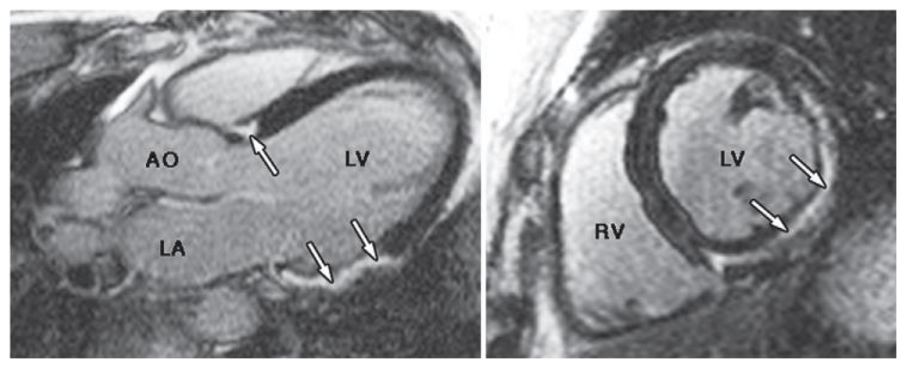
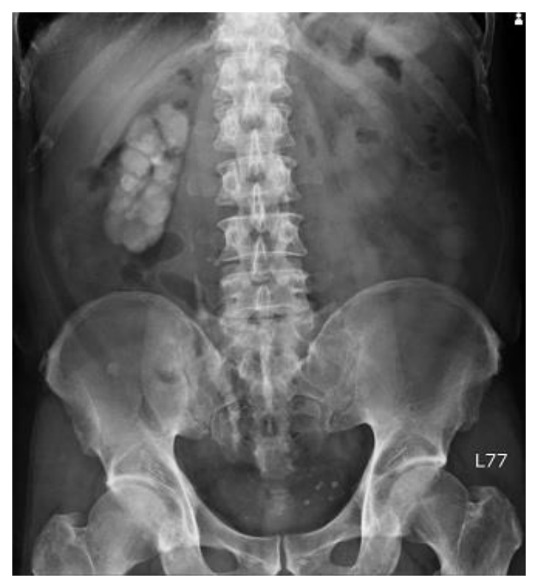

114 年第 1 次醫師醫學（三）（包括內科、家庭醫學科等科目及其相關臨床實例與醫學倫理）試題與答案
這一頁是民國 114 年第 1 次醫師醫學（三）（包括內科、家庭醫學科等科目及其相關臨床實例與醫學倫理）的整份歷屆試題，共 80 題，題目與標準答案出自考選部「國家考試試題及測驗式試題答案」開放資料，其中 80 題附有詳解。以下逐題列出題幹、選項與答案；要計時作答或記錄成績，請用線上練習。
考選部原始場次代碼：114020
線上作答這一科 →
全部 80 題
第 1 題
治療高鉀血症（hyperkalemia）時，下列那一項藥品的使用敘述最不適當？
- （A）10%的葡萄糖酸鈣（calcium gluconate）10 mL 靜脈注射
- （B）胰島素 10 單位靜脈注射後立即給與 50%的葡萄糖水 50 mL 靜脈注射。若血糖超過 250 mg/dL，可以只注射胰島素
- （C）吸入型 beta 2-擬交感神經作用劑（beta-2 agonist），如 albuterol 汽化噴霧劑 10～20 mg，混合 4 mL生理食鹽水吸入
- （D）口服 patiromer，屬陽離子交換樹脂（cation exchange resin），此藥較常見的副作用是便秘與高鎂血症（hypermagnesemia）
答案：（D）
詳解與考點
正解：高鉀血症處置須分清楚心肌膜穩定、將鉀移入細胞與移除體內鉀；patiromer 是腸道陽離子交換劑，用於降低體內鉀，但其重要電解質副作用是低鎂血症（hypomagnesemia），不是高鎂血症。因此 D 的藥物副作用敘述最不適當，故選 D。
A：靜脈注射 calcium gluconate 可穩定心肌細胞膜，主要是降低高鉀造成的致命性心律不整風險，而不會直接降低血鉀，敘述用途合理。
B：靜脈胰島素可促進鉀移入細胞，通常須搭配葡萄糖以預防低血糖；若已有明顯高血糖，是否補充葡萄糖需依血糖與後續監測個別調整，敘述方向合理。
C：吸入型 beta-2 agonist 如 albuterol 可促使鉀移入細胞，是高鉀血症的輔助降鉀措施；它看似只是呼吸用藥，實則可利用 beta-2 刺激降低血鉀。
本題考點：高鉀血症（hyperkalemia）急救分為心肌膜穩定（membrane stabilization）、細胞內移鉀（intracellular shift）與移除體鉀（potassium elimination）；patiromer 為陽離子交換劑（cation exchange resin），可能造成低鎂血症。本題含處置劑量與時效性建議，c 設為 low。
第 2 題
35 歲男性於健檢時發現血尿（hematuria）。 門診再追蹤尿液檢查發現：蛋白排泄量（protein excretion）1500 mg/day、10～20 RBCs/HPF、dysmorphic RBC (+)、RBC cast (+)。後續安排下列評估，何者最不適當？
- （A）檢測免疫血清學檢查，例如 complement levels（C3, C4）、cryoglobulins、anti-GBM antibody、ANCA、ASLO、VDRL、HIV
- （B）測 B 型肝炎（hepatitis B）、C 型肝炎（hepatitis C）病毒血清學檢查
- （C）靜脈腎盂造影（intravenous pyelography）或逆行性腎盂攝影（retrograde pyelography）
- （D）腎臟超音波（renal ultrasonography），必要時考慮腎臟切片（renal biopsy）檢查
答案：（C）
詳解與考點
正解：蛋白排泄量 1500 mg/day、dysmorphic RBC 與 RBC cast 指向腎絲球來源血尿（glomerular hematuria），後續應聚焦腎絲球腎炎的血清學、腎功能與腎臟結構／切片評估。靜脈腎盂造影或逆行性腎盂攝影主要評估集尿系統與泌尿道結構，無法針對這些腎絲球線索提供關鍵資訊，最不適當，故選 C。
A：補體、自體抗體、感染相關血清學等檢查可協助鑑別免疫複合體、血管炎或抗腎絲球基底膜相關病因，屬合理評估。
B：B 型及 C 型肝炎與多種免疫性腎絲球疾病相關，檢測病毒血清學有助病因鑑別，屬適當。
D：腎臟超音波可評估腎臟大小與結構，必要時腎臟切片能確認腎絲球病理診斷，與題幹線索相符。
本題考點：腎絲球性血尿（glomerular hematuria）以變形紅血球（dysmorphic RBC）與紅血球圓柱（RBC cast）為重要線索；蛋白尿（proteinuria）支持腎絲球病變；腎臟切片（renal biopsy）可在適當情況下確認病理診斷。
第 3 題
30 歲男性接受疝氣手術後，出現鞏膜變黃、茶色尿等症狀，抽血發現 total bilirubin 為 4.1 mg/dL，下列那一項診斷最不可能？
- （A）Gilbert's syndrome
- （B）Crigler-Najjar syndrome type I
- （C）腹腔內感染
- （D）溶血（hemolysis）
答案：（B）
詳解與考點
正解：30 歲成人術後出現黃疸與茶色尿，total bilirubin 為 4.1 mg/dL；茶色尿提示有水溶性的結合型膽紅素排入尿中，應先考慮肝膽鬱積、感染相關膽汁鬱積或溶血後的混合性評估。Crigler-Najjar syndrome type I 是嚴重先天性未結合型高膽紅素血症，通常在新生兒期即嚴重表現，且未結合膽紅素不造成茶色尿，最不可能，故選 B。
A：Gilbert's syndrome 可在手術、禁食、感染等壓力下出現輕度未結合型高膽紅素血症，雖不能很好解釋茶色尿，仍比重型先天型 Crigler-Najjar syndrome type I 更可能在成人情境被發現。
C：腹腔內感染或術後感染可造成膽汁鬱積與黃疸，並可能出現結合型膽紅素上升與深色尿，能與臨床情境相連。
D：溶血可增加膽紅素生成，術後亦可能因多種原因發生；它是黃疸鑑別診斷之一，故不能列為最不可能。
本題考點：黃疸（jaundice）須區分未結合型與結合型膽紅素；茶色尿（dark urine）支持結合型膽紅素尿；Crigler-Najjar syndrome type I 為早發且嚴重的未結合型高膽紅素血症。
第 4 題
關於氣促（dyspnea）身體診察與可能病態生理的對應，下列何者配對最適當？
- （A）心音的 P2 消失，考慮右心室壓力增加
- （B）聽診出現 bronchial sound，考慮有肋膜積水
- （C）奇脈（pulsus paradoxus），考慮心包膜異常
- （D）吐氣期腹部向內凹陷，考慮橫膈膜無力
答案：（C）
詳解與考點
正解：奇脈（pulsus paradoxus）是吸氣時收縮壓異常下降的理學徵象，代表吸氣期間心室充填與搏出量受到明顯互動限制，典型應考慮心包膜填塞等心包膜異常。因此配對最適當的是 C。
A：肺動脈壓增高時第二心音的肺動脈瓣成分 P2 通常增強，不是消失；P2 消失反而較不支持右心室壓力增加。
B：支氣管呼吸音（bronchial sound）常提示肺實質實變且氣道通暢；肋膜積水通常使該處呼吸音減弱，配對錯誤。
D：吸氣時腹部向內凹陷的腹部矛盾運動較提示橫膈膜疲乏或無力，題幹卻寫吐氣期向內凹陷，呼吸相位不符。
本題考點：奇脈（pulsus paradoxus）是心包膜填塞（cardiac tamponade）的重要理學徵象；第二心音 P2 增強可見於肺高壓（pulmonary hypertension）；呼吸音與胸腹運動的相位有助定位呼吸困難的病態生理。
第 5 題
有關急性主動脈剝離（acute aortic dissection）之描述，下列何者最不適當？
- （A）發生於後背肩胛骨間的撕裂性疼痛，比單純前胸的撕裂性疼痛更危險
- （B）可能出現上肢單側脈搏消失
- （C）若出現頸靜脈怒張（jugular vein engorgement），需考慮心包膜填塞
- （D）可能同時伴有急性心肌梗塞
答案：（A）
詳解與考點
正解：急性主動脈剝離的典型疼痛與致命併發症；疼痛放射到背部肩胛骨間可提示剝離延伸，但疼痛位置本身不能用來判定比單純前胸撕裂痛「更危險」。危險度取決於剝離部位、分支血管受累及心包膜破裂等，而非此一疼痛位置的比較，故最不適當的是 A。
B：剝離若累及供應上肢的分支血管，可造成兩側血壓差異、肢體灌流不良或單側脈搏消失；此為大血管分支受累的警訊，敘述正確，故非答案。
C：升主動脈剝離破裂入心包膜腔可導致心包膜填塞（cardiac tamponade），頸靜脈怒張是其重要臨床徵象之一，須立即考慮此併發症，故敘述適當。
D：剝離若波及冠狀動脈開口，尤其右冠狀動脈，可能造成急性心肌缺血甚至心肌梗塞；它看似是另一個獨立診斷，實際上可為主動脈剝離的併發症，故敘述正確。
本題考點：急性主動脈剝離（acute aortic dissection）的疼痛與灌流障礙；心包膜填塞（cardiac tamponade）與冠狀動脈受累是升主動脈剝離的重要致命併發症。
第 6 題
利用介入心導管技術、不開刀處置結構性心臟病，為近年來重要醫學進展之一，下列相關敘述何者錯誤？
- （A）經由阻塞器（occluder）置放，可以有效關閉心房中隔缺損（atrial septal defect, ASD）、開放性卵圓窗（patent foramen ovale, PFO）、或開放性動脈導管（patent ductus arteriosus, PDA）等疾病
- （B）氣球瓣膜擴張術可用於治療風濕性二尖瓣狹窄，目前常用術式中，氣球導管是經由股靜脈送入
- （C）經導管主動脈瓣置換（transcatheter aortic valve replacement, TAVR）可治療嚴重主動脈瓣狹窄，適合用於高度及中度外科手術風險之病患
- （D）經導管二尖瓣緣對緣（edge-to-edge）修補術可治療嚴重二尖瓣閉鎖不全，特別適合用於因腱索斷裂（chordae rupture）造成瓣膜逆流之病患
答案：（D）
詳解與考點
正解：經導管二尖瓣緣對緣修補術（transcatheter edge-to-edge repair）的適應情境。此術式主要用於解剖條件合適、因手術風險高而不宜開刀的嚴重二尖瓣逆流；腱索斷裂常造成急性器質性逆流，是否適合經導管修補必須依病因與瓣膜解剖評估，不能說「特別適合」，故錯誤的是 D。
A：經導管阻塞器可用於選擇合適的 ASD、PFO 與 PDA 關閉，目標是封閉異常交通，敘述正確。
B：風濕性二尖瓣狹窄可接受經皮氣球二尖瓣擴張術（percutaneous mitral balloon commissurotomy）；導管通常由股靜脈進入，經房間隔到達左心房，敘述正確。
C：TAVR 可治療嚴重主動脈瓣狹窄，已適用於經完整評估後的高及中度外科手術風險病人，敘述正確。
本題考點：結構性心臟病的經導管治療（transcatheter structural heart intervention）；經導管二尖瓣緣對緣修補（transcatheter edge-to-edge repair）須依逆流病因、瓣膜解剖與手術風險選擇。
第 7 題
關於核醫心肌灌流造影用於已知冠狀動脈疾病病人的臨床應用，下列敘述何者錯誤？
- （A）接受冠狀動脈繞道術後 5 年內，在病人無症狀的情形下，常規的心肌灌流造影評估是必要的檢查項目
- （B）接受經皮冠狀動脈介入治療（PCI）後 2 年內，在病人無症狀的情形下，常規的心肌灌流造影評估並非必要的常規檢查項目
- （C）在接受冠狀動脈繞道術後仍有症狀的病人，核醫心肌灌流造影可用以評估術後血管的狹窄造成心肌缺血之嚴重程度
- （D）經皮冠狀動脈介入治療（PCI）後的早期，核醫心肌灌流造影仍可能觀察到輕微可逆性的心肌灌流缺損
答案：（A）
詳解與考點
正解：血運重建後「無症狀」病人的追蹤；檢查應以症狀或高風險臨床變化驅動，而非在冠狀動脈繞道術後 5 年內一律常規安排心肌灌流造影。故 A 將無症狀者的常規檢查說成必要，不正確。
B：PCI 後 2 年內無症狀者通常不需例行心肌灌流造影，因檢查結果未必改變處置，敘述正確。
C：繞道術後持續有症狀時，心肌灌流造影可評估缺血範圍與嚴重度，協助判斷是否有移植物或原生血管狹窄，敘述正確。
D：PCI 後早期即使臨床成功，仍可能因微血管功能、殘餘狹窄或灌流恢復過程出現輕微可逆性缺損；它看似等同支架失敗，實際上不能單憑此現象判定再狹窄，故敘述正確。
本題考點：心肌灌流造影（myocardial perfusion imaging）的適當性；冠狀動脈血運重建（coronary revascularization）後，症狀與臨床風險是追蹤檢查的主要觸發條件。
第 8 題
47 歲男性，曾頭暈昏倒多次，心電圖檢查顯示多發性心室期外收縮。磁振造影發現左心室較大，下壁及下外側壁收縮功能較差，顯影劑注射後，磁振造影出現顯影劑延遲增強（late gadolinium enhancement, LGE），如附圖所示。下敘述何者錯誤？

- （A）此病患的 LGE 位於心壁的中外層（mid myocardial, epicardial region），是典型浸潤型疾病（infiltration）的特殊表現，如肉瘤病（sarcoidosis），在此切片檢查（biopsy）可增加陽性率
- （B）如果是擴大型心肌病變的 LGE 多位於心壁中間（midwall），呈現斑塊（patchy）或是細線狀（linear），最常見位置是 basal septum
- （C）心肌梗塞病人的 LGE 代表心肌結疤處，多寡與心臟功能及預後有關，一般由心內膜開始（subendocardialregion）
- （D）心肌水腫時在 MRI 的 T1 訊號會增加，與 LGE 分別代表不同的組織變化，此與疾病的不同時期有關
答案：（D）
詳解與考點
正解：圖中左心室下壁、下外側壁可見非心內膜分布的心肌中層至心外膜側延遲增強，屬非缺血性心肌損傷的 LGE 型態。心肌水腫在傳統 MRI 主要表現為 T2 加權影像訊號增加；雖然原生 T1 mapping 的 T1 值也可隨水腫升高，但不能概括稱為「T1 訊號增加」。LGE 則反映細胞外間質增加及釓顯影劑滯留，例如壞死、纖維化或瘢痕，故 D 的 T1 訊號敘述錯誤。
A：心肌中外層、心外膜側的斑塊狀 LGE 是心肌肉瘤病等浸潤性或發炎性疾病可見的非缺血性分布。以 LGE 異常區作為心肌切片的定位目標，可避免盲目切片漏掉局部病灶，增加檢出陽性病灶的機會，故非錯誤敘述。
B：擴張型心肌病變的 LGE 常呈心肌中層線狀或斑塊狀分布，尤其常見於基底部室間隔；這與缺血性病灶由心內膜開始的分布不同，敘述正確。
C：心肌梗塞的 LGE 代表壞死後纖維化或瘢痕，範圍與左心室收縮功能及預後有關。缺血損傷最先波及灌流最末端的心內膜下層，故 LGE 通常由心內膜下開始，嚴重時可延伸至全層，敘述正確。
本題考點：心臟磁振造影延遲增強（late gadolinium enhancement, LGE）用於辨識心肌瘢痕與纖維化；缺血性 LGE 多由心內膜下開始，非缺血性心肌病變常見中層或心外膜側分布；心肌水腫（myocardial edema）在傳統 MRI 以 T2 訊號升高為重要表現。
第 9 題
心臟動作電位（action potential）由許多離子通道（ion channel）調控。下列何種離子不直接參與心臟動作電位的產生與維持？
- （A）鈉離子（Na+）
- （B）鉀離子（K+）
- （C）鈣離子（Ca2+）
- （D）鎂離子（Mg2+）
答案：（D）
詳解與考點
正解：心肌細胞動作電位直接形成的主要跨膜離子電流。Na+ 參與快速去極化，Ca2+ 參與平臺期與收縮耦聯，K+ 主導再極化；Mg2+ 雖會影響離子通道與心律穩定性，並非心臟動作電位直接產生與維持的主要跨膜電流，故選 D。
A：Na+ 內流形成多數工作心肌細胞第 0 期的快速去極化，直接參與動作電位。
B：K+ 外流主導再極化，並與靜止膜電位維持密切相關，直接參與動作電位。
C：Ca2+ 內流形成心室肌動作電位的平臺期，亦觸發鈣誘發鈣釋放與收縮，直接參與動作電位。
本題考點：心肌動作電位（cardiac action potential）的離子基礎；去極化（depolarization）、平臺期（plateau phase）與再極化（repolarization）分別涉及 Na+、Ca2+、K+ 電流。
第 10 題
下列何種藥物不會造成心電圖 QT interval prolong？
- （A）quinidine
- （B）digoxin
- （C）ibutilide
- （D）sotalol
答案：（B）
詳解與考點
正解：QT interval 反映心室去極化至再極化完成的時間；阻斷鉀離子通道的抗心律不整藥常延長 QT。digoxin 主要增加迷走神經作用並抑制 Na+/K+-ATPase，典型心電圖改變是 ST 段下凹及 QT 縮短而非延長，故選 B。
A：quinidine 為 Ia 類抗心律不整藥，可延長動作電位與 QT interval，故不是答案。
C：ibutilide 為 III 類抗心律不整藥，延長再極化並可造成 QT prolongation，是扭轉型心室頻脈的風險來源。
D：sotalol 具有 III 類鉀離子通道阻斷作用，可延長 QT；它看似兼具 β 阻斷作用而較安全，但仍須注意 QT 延長，故非答案。
本題考點：QT interval prolongation；Ia 與 III 類抗心律不整藥（antiarrhythmic drugs）會延長再極化，增加扭轉型心室頻脈（torsades de pointes）風險。
第 11 題
下列何者不是 genetic arrhythmia syndrome？
- （A）long QT syndrome
- （B）Brugada syndrome
- （C）catecholaminergic polymorphic ventricular tachycardia（VT）
- （D）ventricular tachycardia（VT）with structural heart disease
答案：（D）
詳解與考點
正解：genetic arrhythmia syndrome 指沒有結構性心臟病也可能因遺傳性離子通道或相關基因異常發生心律不整的疾病。結構性心臟病併發的 VT 是心肌病變或瘢痕造成的心律不整，非典型遺傳性心律不整症候群，故選 D。
A：long QT syndrome 常與離子通道基因異常相關，屬遺傳性心律不整症候群。
B：Brugada syndrome 為遺傳相關的鈉離子通道病（channelopathy），可致惡性心室心律不整。
C：catecholaminergic polymorphic VT 常與鈣離子處理相關基因異常有關，運動或情緒壓力誘發，屬遺傳性心律不整症候群。
本題考點：遺傳性心律不整症候群（genetic arrhythmia syndromes）；離子通道病（channelopathies）與結構性心臟病相關心室頻脈（VT）的區別。
第 12 題
關於 heart failure with preserved ejection fraction 的敘述，下列何者正確？
- （A）常見於急性心肌梗塞的急性期
- （B）常見於甲狀腺亢進早期的病人
- （C）常見於有多年高血壓病史的老年人
- （D）常見於病毒性心肌炎的急性期
答案：（C）
詳解與考點
正解：射出分率保留型心衰竭（heart failure with preserved ejection fraction, HFpEF）的典型族群。長年高血壓造成左心室肥厚與順應性下降，舒張充盈壓上升而射出分率可仍保留；此型態特別常見於老年高血壓病人，故選 C。
A：急性心肌梗塞急性期較常因收縮功能受損造成射出分率下降的心衰竭，非 HFpEF 的典型情境。
B：甲狀腺亢進早期可造成高心輸出狀態與心悸，但不是 HFpEF 最典型的長期結構性背景。
D：病毒性心肌炎急性期常直接傷害心肌收縮功能，較易出現射出分率降低的表現，與 HFpEF 不符。
本題考點：射出分率保留型心衰竭（HFpEF）；舒張功能障礙（diastolic dysfunction）常與高齡、長期高血壓及左心室肥厚相關。
第 13 題
下列關於心房顫動（atrial fibrillation）臨床上使用抗血栓治療之敘述，何者錯誤？
- （A）atrial fibrillation 在老人較多，80 歲以上約有 10%
- （B）發生 atrial fibrillation 的危險因素包括高血壓、糖尿病、心臟病、肥胖症和睡眠呼吸暫停
- （C）atrial fibrillation 使中風的風險增加約 5 倍，據估計占所有中風的病人約 25%
- （D）如果 atrial fibrillation 的持續時間超過 48 小時或未知，但中風風險較低（CHA2DS2-VASc 為 0 或 1）的病人中，在未給抗凝血劑的狀況下，將心臟電擊回正常心律應是安全而被建議的
答案：（D）
詳解與考點
正解：持續超過 48 小時或發作時間未知的心房顫動接受電氣整流前，是否需要避免血栓栓塞。此時即使 CHA2DS2-VASc 低，左心耳可能已有血栓；未抗凝便直接電擊並非安全或被建議，應先採適當抗凝策略或以經食道心臟超音波排除血栓後處置，故 D 錯誤。
A：心房顫動盛行率隨年齡明顯增加，極高齡者可達約一成，敘述符合其流行病學趨勢。
B：高血壓、糖尿病、心臟病、肥胖與睡眠呼吸中止均為心房顫動的重要危險因素，敘述正確。
C：心房顫動會顯著提高缺血性中風風險，且在中風病人中占有重要比例，敘述正確。
本題考點：心房顫動（atrial fibrillation）的血栓栓塞風險；心律整流（cardioversion）前抗凝與左心耳血栓（left atrial appendage thrombus）評估。
第 14 題
有關心衰竭（heart failure, HF）治療同時考慮其他共病時，下列敘述何者錯誤？
- （A）雖然有些治療糖尿病的藥物與增加 HF 的風險有關，但是使用第二型鈉依賴型葡萄糖共同運輸蛋白抑制劑（SGLT2 inhibitor，如 empagliflozin）降低血糖被證明可降低糖尿病患者 HF 的風險
- （B）較高的身體活動量與較低的 HF 發生風險有關
- （C）在中年人和老年人中，吸菸是 HF 的風險因素之一
- （D）在 Framingham 心臟研究中，心肌梗塞病史、右束支傳導阻滯（RBBB）、無症狀左心室收縮功能障礙、總血紅蛋白濃度升高都與 HF 風險增加顯著相關
答案：（D）
詳解與考點
正解：Framingham 心臟研究所列的心衰竭風險因子；心肌梗塞病史、傳導異常及無症狀左心室收縮功能障礙可增加風險，但血紅蛋白升高不是其典型風險因子。較合理的風險訊號反而是貧血等反映共病或血液動力負荷的狀態，故 D 錯誤。
A：部分降血糖藥可能增加心衰竭風險，而 SGLT2 inhibitor 已證實可降低糖尿病病人的心衰竭事件，敘述正確。
B：較高身體活動量與較低心衰竭發生風險相關，符合心血管危險因子控制的方向，故非答案。
C：吸菸會促進動脈粥樣硬化與心血管疾病，在中老年人是心衰竭風險因子，敘述正確。
本題考點：心衰竭（heart failure）的危險因子與共病管理；第二型鈉依賴型葡萄糖共同運輸蛋白抑制劑（SGLT2 inhibitor）具有降低心衰竭事件的效益。
第 15 題
一位慢性 B 型肝炎帶原者因活動性肺結核併發燒而接受下列藥物治療：isoniazid、rifampin、ethambutol、streptomycin。一個月後抽血檢查發現 aspartate aminotransferase（AST）/alanine aminotransferase（ALT）：120/140（U/L），total bilirubin：0.9（mg/dL），肝功能其他項目仍在正常範圍內。下列敘述何者正確？
- （A）應立即停止所有抗結核藥物
- （B）如同 acetaminophen，isoniazid 服用的劑量越大，肝的傷害也就越大
- （C）口服類固醇可降低肝臟發炎，改善肝指數異常情形
- （D）isoniazid 引起肝炎的風險較 ethambutol 為高
答案：（D）
詳解與考點
正解：抗結核藥的肝毒性排序；isoniazid 為較常見的藥物性肝炎來源，而 ethambutol 的肝毒性相對少見，因此 isoniazid 引起肝炎的風險較 ethambutol 高，故選 D。題中轉胺酶上升而膽紅素正常，仍應依症狀、上升趨勢與整體肝功能持續監測。
A：轉胺酶異常不代表一律立刻停用全部抗結核藥；須依肝炎症狀與肝功能異常程度個別判斷，故此絕對敘述不正確。
B：isoniazid 肝炎多與個體代謝、年齡及宿主因素相關，不能簡化成如 acetaminophen 般劑量越大傷害必越大，故錯。
C：口服類固醇不是一般抗結核藥物性肝損傷的常規處置；它看似可抑制發炎，卻可能掩蓋病情並帶來感染風險，故非適當選項。
本題考點：抗結核藥物性肝損傷（antituberculous drug-induced liver injury）；isoniazid 的肝炎風險高於 ethambutol，異常肝功能須結合症狀與趨勢評估。
第 16 題
一位剛上大學的女性因流涎、肢體僵硬及震顫等運動性障礙，住進神經科病房。住院抽血發現肝功能異常會診胃腸肝膽科醫師。病人血清檢查 HBsAg 及 anti-HCV 皆呈陰性。下列敘述何者最適當？①可能發生急性猛爆性肝炎（fulminant hepatitis），血清及膽汁內的銅離子濃度減少 ②口服 zinc、trientine 不可用於懷孕期 ③身體診察在病人的角膜上可見 Kayser-Fleischer ring ④肝臟病理切片呈現 hepato-lenticulardegeneration
- （A）①④
- （B）①③
- （C）③④
- （D）②④
答案：（C）
詳解與考點
正解：官方答案為 C；惟年輕病人合併肝功能異常與震顫、僵硬等運動障礙，典型指向 Wilson disease。銅沉積於角膜可見 Kayser-Fleischer ring。惟 hepatolenticular degeneration 是 Wilson disease 的別名，不是肝臟切片的特定病理型態；肝切片可見脂肪變性、肝炎或肝硬化等非特異性變化。在本題將（④）用作疾病相關肝病變的考試語境下，官方組合為③④，故選 C。
A：①④中，④正確；但猛爆性肝炎時血清銅可因肝細胞壞死釋出而升高，不能說血清銅離子減少，故組合錯誤。
B：①③中，③正確但①錯誤，因此不能選。
D：②④中，④正確；但 zinc 與 trientine 可在懷孕期依病情持續使用並調整治療，不能一概稱不可使用，故組合錯誤。
本題考點：威爾森氏症（Wilson disease）；Kayser-Fleischer ring 與肝豆狀核變性（hepatolenticular degeneration）反映銅代謝異常造成的肝臟與神經病變。
第 17 題
80 歲的林先生被送來急診室，主訴嚴重且無法緩解的腹痛一天，由身體診察發現體溫為攝氐 36.5 度，血壓95/58 mmHg，心跳 105 bpm。心音快且不規則，兩側肺部聽診正常，腹部脹且腸音較慢，但腹部柔軟，並沒有明顯的腹膜炎徵象，其他身體診察大致正常。他平常有高血壓及高血脂且用藥控制中，最近因為胸悶有接受過心導管檢查。下列針對他的疾病的敘述及治療方式何者錯誤？
- （A）由於年齡大且有心律不整，最近有接受過心導管檢查，需考慮缺血性腸炎
- （B）血壓降低及有血管粥狀硬化的風險，是疾病的加重因子，需要儘速給與血管收縮劑以提升血壓
- （C）可以檢查全血球計數、血液生化檢查包括胰澱粉酶及胰脂酶、凝血功能、乳酸、動脈血液氣體分析、心肌酵素及心電圖等
- （D）可以利用電腦斷層合併血管攝影來協助診斷，治療上應給與針對革蘭氏陰性菌及厭氧菌的抗生素。若有腹膜炎的徵象時，需要考慮剖腹探查
答案：（B）
詳解與考點
正解：高齡、心律不整、劇烈腹痛但腹膜徵象不明顯，合併低血壓，應高度懷疑急性腸繫膜缺血（acute mesenteric ischemia）。治療需恢復腸道灌流與積極復甦；血管收縮劑會使內臟血管灌流更差，不能作為此病的常規加重因子處置，故錯誤的是 B。
A：心房顫動可造成腸繫膜動脈栓塞，近期心導管亦可能與血管事件相關，缺血性腸炎或腸繫膜缺血必須列入鑑別，敘述適當。
C：血球計數、電解質與腎功能、乳酸、動脈血液氣體、凝血功能、心電圖及心肌酵素有助評估缺血、休克與鑑別診斷，敘述正確。
D：電腦斷層血管攝影可協助診斷；腸道缺血有細菌移位風險，應涵蓋革蘭氏陰性菌與厭氧菌。若出現腹膜炎，需考慮手術探查，敘述正確。
本題考點：急性腸繫膜缺血（acute mesenteric ischemia）；與疼痛不成比例（pain out of proportion）、心房顫動、低灌流及腹膜炎的辨識與處置。
第 18 題
關於下列食道構造及功能性之疾病敘述，何者錯誤？
- （A）在橫膈膜裂孔疝氣（hiatal hernia）中以第一型之滑脫型（sliding hernia）占最多
- （B）食道憩室 Zenker's diverticulum 產生之處為上端食道之食道壁脆弱之位置（Killian's triangle）
- （C）食道遲緩不能（achalasia）為吞嚥時近端食道括約肌無法放鬆所造成
- （D）高解析度食道壓力測量（manometry）為一食道功能性疾病之診斷工具
答案：（C）
詳解與考點
正解：achalasia 的放鬆障礙位置。食道遲緩不能是下食道括約肌（lower esophageal sphincter, LES）於吞嚥時無法適當放鬆，並伴食道體蠕動異常；不是近端或上食道括約肌無法放鬆，故 C 錯誤。
A：裂孔疝氣以第一型滑脫型（sliding hernia）最常見，胃食道交界處上移穿過橫膈裂孔，敘述正確。
B：Zenker's diverticulum 發生在咽食道交界的 Killian's triangle，此處為後壁肌層相對薄弱處，敘述正確。
D：高解析度食道壓力測量可量化括約肌功能與食道蠕動，是食道功能性疾病的重要診斷工具，敘述正確。
本題考點：食道遲緩不能（achalasia）；下食道括約肌（LES）放鬆失常與高解析度壓力測量（high-resolution manometry）。
第 19 題
一位 38 歲女性病人因胃痛求診，胃鏡下發現胃潰瘍。病人自述家庭中也有數人有胃或十二指腸潰瘍的病史。下列何者正確？
- （A）胃潰瘍成因可能為幽門螺旋桿菌感染，要確診唯一的方法僅有做胃部切片進行組織病理檢驗檢出細菌
- （B）若病人組織切片培養不出幽門螺旋桿菌，則病人不可能感染幽門螺旋桿菌
- （C）病人得到胃腺癌和胃部淋巴瘤的機會增加
- （D）尿素呼氣測試（urea breath test）的原理為胃幽門螺旋桿菌存在下，會抑制同位素標定尿素水解的反應，減少呼氣中標定碳 13 的含量
答案：（C）
詳解與考點
正解：胃潰瘍合併可能的幽門螺旋桿菌感染；慢性感染會造成慢性胃炎與胃黏膜變化，增加胃腺癌及胃部淋巴瘤，尤其 MALT lymphoma 的風險，故選 C。
A：幽門螺旋桿菌可用胃部切片的組織學檢查診斷，但並非唯一方法，亦可使用尿素呼氣測試、糞便抗原或快速尿素酶試驗，故錯。
B：切片培養陰性不能排除感染，因採樣位置、細菌量及近期藥物均可能造成偽陰性；它看似是直接檢出法，卻不具完全敏感度，故錯。
D：尿素呼氣測試是利用細菌尿素酶水解同位素標定尿素，產生可在呼氣偵測到的標定二氧化碳，並非抑制水解反應，故錯。
本題考點：幽門螺旋桿菌（Helicobacter pylori）感染；尿素呼氣測試（urea breath test）與胃腺癌（gastric adenocarcinoma）、MALT lymphoma 的關聯。
第 20 題
下列關於克隆氏病（Crohn's disease）之敘述何者錯誤？
- （A）主要侵犯小腸，有時也會侵犯大腸
- （B）末端迴腸（ileum）是最好發部位
- （C）可能會引發進食後腹痛與脂肪便（steatorrhea）
- （D）抗腫瘤壞死因子（anti-TNF）製劑於中重度 Crohn's disease 之治療效果不佳
答案：（D）
詳解與考點
正解：中重度 Crohn's disease 的生物製劑治療；抗腫瘤壞死因子製劑可用於誘導與維持緩解，也可治療部分瘻管性疾病，並非治療效果不佳，故 D 錯誤。
A：Crohn's disease 可侵犯消化道任何部位，但常見於小腸，亦可合併大腸病灶，敘述正確。
B：末端迴腸是常見侵犯部位，與腹痛、吸收不良及狹窄等臨床問題相關，敘述正確。
C：小腸病變造成吸收不良時，可能出現餐後腹痛與脂肪便，敘述正確。
本題考點：克隆氏病（Crohn's disease）的腸段侵犯與吸收不良；抗腫瘤壞死因子（anti-TNF）治療用於中重度發炎性腸病。
第 21 題
預測急性胰臟炎（acute pancreatitis）嚴重度之指標 Bedside Index of Severity in AcutePancreatitis（BISAP）不包含下列何項？
- （A）BUN＞25 mg/dL
- （B）意識障礙
- （C）腹水
- （D）胸部 X 光顯示有肋膜積液（pleural effusion）
答案：（C）
詳解與考點
正解：BISAP 的五項床邊嚴重度指標：BUN 升高、意識障礙、SIRS、年齡較高與肋膜積液；腹水不在其中，故選 C。
A：BUN>25 mg/dL 是 BISAP 的一項，反映脫水、灌流不足或較高嚴重度風險，故非答案。
B：意識障礙是 BISAP 的一項，用來辨識全身性病況較差的病人，故非答案。
D：影像顯示肋膜積液是 BISAP 的一項；它看似屬胸腔問題，卻是急性胰臟炎全身性發炎與體液移位的嚴重度訊號，故非答案。
本題考點：急性胰臟炎嚴重度（acute pancreatitis severity）；BISAP（Bedside Index of Severity in Acute Pancreatitis）包含 BUN、意識狀態、SIRS、年齡及肋膜積液。
第 22 題
臨床上常用 Child-Turcotte-Pugh score 來判斷肝硬化嚴重度，Child-Turcotte-Pugh score 並未包含下列何項？
- （A）bilirubin
- （B）prothrombin time
- （C）hepatic encephalopathy
- （D）alanine aminotransferase（ALT）
答案：（D）
詳解與考點
正解：Child-Turcotte-Pugh score 評估肝硬化儲備功能的構成。它納入 bilirubin、albumin、凝血功能、腹水與 hepatic encephalopathy；ALT 是肝細胞受損的酵素指標，並非此分數項目，故選 D。
A：bilirubin 反映膽紅素排除功能，是 Child-Turcotte-Pugh score 的評分項目。
B：prothrombin time 或 INR 反映肝臟合成凝血因子的能力，是評分項目。
C：hepatic encephalopathy 的程度反映肝衰竭相關腦病變，是評分項目。
本題考點：Child-Turcotte-Pugh score；肝硬化（cirrhosis）的肝臟儲備功能以 bilirubin、albumin、凝血功能、腹水及肝性腦病變評估。
第 23 題
下列何者不是非酒精性脂肪肝（nonalcoholic fatty liver disease, NAFLD）的主要危險因子？
- （A）肥胖
- （B）高尿酸血症
- （C）糖尿病
- （D）高血脂症
本題送分，無標準答案
詳解與考點
本題官方公告送分。
第 24 題
56 歲女性，末期腎病病人，接受連續性可攜式腹膜透析（CAPD）治療 2 年，最近 3 個月開始有下肢水腫、體液堆積的現象。此病人接受腹膜平衡測驗（peritoneal equilibrium test）結果顯示其腹膜為高腹膜通透性（high transporter） ，為解決其體液過多（fluid overload）現象，下列何種處置最不適當？
- （A）增加透析藥水葡萄糖濃度
- （B）採用不易吸收碳水化合物（icodextrin）透析藥水
- （C）延長透析藥水的留滯時間
- （D）改使用連續性循環式腹膜透析（CCPD）
答案：（C）
詳解與考點
正解：腹膜高通透性（high transporter）時透析液葡萄糖很快被吸收，長時間留滯會使原本用於超濾的滲透壓梯度消失，反而降低除水效果並加重體液過多。因此延長留滯時間最不適當，故選 C。
A：提高透析液葡萄糖濃度可暫時增加滲透壓梯度與超濾量，能協助處理體液過多，故非答案。
B：icodextrin 吸收較慢，可在較長留滯時維持膠體滲透壓與超濾，適合高通透性病人的體液管理。
D：CCPD 可調整為較短且較頻繁的交換，以減少高通透性腹膜中滲透壓梯度過快消失的問題，故屬可考慮處置。
本題考點：腹膜透析（peritoneal dialysis）的腹膜轉運特性；高腹膜通透性（high transporter）病人的超濾（ultrafiltration）與留滯時間調整。
第 25 題
49 歲男性腎移植病人，移植 3 年後近期改變免疫抑制劑的處方，3 週後發生口腔潰爛、下肢水腫、尿中蛋白＞300 mg/dL（試紙），血中 LDL 168 mg/dL，下列何種藥物最可能造成上述表現？
- （A）cyclosporine
- （B）tacrolimus
- （C）mycophenolate mofetil
- （D）sirolimus
答案：（D）
詳解與考點
正解：免疫抑制劑更換後出現口腔潰瘍、蛋白尿、水腫與高 LDL；sirolimus 為 mTOR inhibitor，常見不良反應包括口腔炎、蛋白尿及高脂血症，最能同時解釋題中表現，故選 D。
A：cyclosporine 較典型的不良反應包括腎毒性、高血壓、牙齦增生與多毛，不能最完整解釋口腔潰瘍、蛋白尿及高 LDL 的組合。
B：tacrolimus 亦可造成腎毒性、神經毒性與糖尿病，但高脂血症及口腔潰瘍並非本題最具辨識度的組合。
C：mycophenolate mofetil 常見腸胃道症狀與骨髓抑制，並非蛋白尿合併高 LDL 的典型原因。
本題考點：sirolimus（mTOR inhibitor）的不良反應；腎移植免疫抑制（immunosuppression）須辨識口腔炎、蛋白尿及高脂血症等藥物毒性。
第 26 題
有關 Fabry disease 的敘述，何者錯誤？
- （A）為一種罕見之遺傳性疾病，各人種都有。此病是因負責製造α-galactosidase A 酵素的基因缺陷引起
- （B）屬性聯遺傳疾病，父親帶有此基因缺陷時，其所生的子女，女兒有一半的機會帶因，而兒子會發病
- （C）臨床診斷要以家族病史、四肢疼痛、皮膚病變、特有的渦狀角膜濁斑，以及在尿道沉渣或組織檢體中發現充滿脂質的細胞為基礎。再以白血球中α-galactosidase A 酵素的活性作最後確診。進一步也可做基因突變的分析
- （D）目前治療可分為症狀治療及酵素替代療法（enzyme replacement therapy）。神經痛可透過藥物來緩解，心臟及腦血管併發症仍依一般治療原則，腎衰竭則需要透析治療
答案：（B）
詳解與考點
正解：X 連鎖遺傳。Fabry disease 由 GLA 基因異常造成 α-galactosidase A 缺乏；帶有變異的父親把其唯一 X 染色體傳給所有女兒，不傳給兒子。因此（B）說女兒只有一半機會帶因、兒子會發病，錯誤。
A：本病是罕見溶小體儲積疾病，各人種皆可見，致病機轉的敘述正確。
C：肢端疼痛、血管角質瘤、渦狀角膜混濁可提示本病；酵素活性與基因檢測可協助確認，方向正確。
D：治療包括症狀與器官併發症處置，以及酵素替代療法；腎衰竭依腎臟替代治療原則處理，正確。
本題考點：Fabry disease 是溶小體儲積疾病（lysosomal storage disease）；X 連鎖遺傳（X-linked inheritance）中，患病父親的女兒皆承接其 X 染色體；酵素替代療法（enzyme replacement therapy）可作疾病特異性治療。
第 27 題
有關血栓性微血管病（thrombotic microangiopathy, TMA），下列何者錯誤？
- （A）診斷 TMA，必須血小板低下加上 microangiopathic hemolytic anemia（MAHA）兩個條件同時成立，而 MAHA就是檢驗數據上看到 LDH 上升、haptoglobin 下降，以及血液抹片上有 schistocyte
- （B）TMA 的臨床表現包括神經學症狀、腎臟侵犯及腸胃道症狀
- （C）診斷 TMA 後，如果 ADAMTS13 酵素的活性＞15%，則可以診斷栓塞性血小板低下紫斑（TTP）
- （D）栓塞性血小板低下紫斑（TTP）可使用 plasma exchange 加上 corticosteroid 治療
答案：（C）
詳解與考點
正解：ADAMTS13 活性用來辨識 TTP。血栓性血小板低下紫斑症（TTP）典型為嚴重 ADAMTS13 缺乏，活性通常小於 10%；大於 15% 不能據此診斷 TTP，應思考其他 TMA 原因，故（C）錯誤。
A：TMA 的核心為血小板低下合併微血管病性溶血性貧血（MAHA）；可見 LDH 上升、haptoglobin 下降及 schistocyte，正確。
B：微血栓可侵犯腎臟、中樞神經及腸胃道，故可有相應症狀，正確。
D：疑似 TTP 是急症，血漿置換（plasma exchange）合併 corticosteroid 是重要治療，正確。
本題考點：血栓性微血管病（thrombotic microangiopathy, TMA）以血小板低下及 MAHA 為核心；TTP 與嚴重 ADAMTS13 缺乏相關；須緊急血漿置換。
第 28 題
有關腎絲球過濾率（glomerular filtration rate）自我調節（autoregulation）的三個調控因素中，下列敘述何者正確？
- （A）作用於出球小動脈（efferent arteriole）的自主性肌源反射（autonomous myogenic reflex）
- （B）腎小管–腎絲球回饋機轉（tubuloglomerular feedback）
- （C）血管收縮素 II（angiotensin II）作用於入球小動脈（afferent arteriole）的血管收縮
- （D）前列腺素 E1（prostaglandin E1）作用於出球小動脈（efferent arteriole）的血管擴張
答案：（B）
詳解與考點
正解：GFR 自我調節的機轉。腎小管－腎絲球回饋（tubuloglomerular feedback）由致密斑偵測遠端小管 NaCl 送達量，調整入球小動脈張力與腎素釋放，以穩定腎血流及 GFR，故（B）正確。
A：肌源反射（myogenic reflex）主要作用於入球小動脈，不是出球小動脈。
C：血管收縮素 II 在生理濃度下較偏向收縮出球小動脈；把血管部位寫成入球小動脈是誘答的錯置。
D：前列腺素主要協助入球小動脈擴張、維持腎灌流，不是出球小動脈擴張。
本題考點：腎絲球過濾率自我調節（glomerular filtration rate autoregulation）包括肌源反射（myogenic reflex）及腎小管－腎絲球回饋（tubuloglomerular feedback）；血管收縮素 II 較偏向收縮出球小動脈。
第 29 題
下列有關慢性腎臟病的敘述，何者最不適當？
- （A）高血壓乃目前臺灣新發生長期透析（incident dialysis）病患最主要之原發病因
- （B）慢性腎臟病患合併糖尿病，其血壓值應控制在 130/80 mmHg 以下
- （C）心血管疾病為最常造成慢性腎臟病患死亡的原因
- （D）低蛋白飲食可以改善尿毒症狀，但可能會增加營養不良的風險
答案：（A）
詳解與考點
正解：臺灣新發生長期透析病人的原發病因排序。（A）把高血壓列為最主要原發病因並不適當；相關臺灣透析登錄統計中，糖尿病為新發長期透析最主要原發病因，高血壓並非第一位。登錄統計會隨年度與定義更新，題目未列年份，故此排序的時效性不確定。
B：130/80 mmHg 以下是本題採用的 CKD 合併糖尿病照護目標；實務目標仍須依標準化量測、病人耐受性與適用指引個別化，故在本題框架下屬適當。
C：心血管疾病是 CKD 病人最重要且最常見的死亡原因，正確。
D：低蛋白飲食可改善部分尿毒症狀，但須防範營養不良風險，正確。
本題考點：慢性腎臟病（chronic kidney disease, CKD）的重要死因為心血管疾病（cardiovascular disease）；糖尿病腎病變（diabetic kidney disease）是新進透析病因的重要流行病學概念；低蛋白飲食（low-protein diet）須兼顧營養。
第 30 題
下列有關腫瘤溶解（tumor lysis）所造成之電解質或代謝異常表現，何者最不常見？
- （A）hyperphosphatemia
- （B）hyperuricemia
- （C）hypocalcemia
- （D）hyponatremia
答案：（D）
詳解與考點
正解：腫瘤細胞快速崩解。核酸代謝使尿酸上升，細胞內磷酸鹽外流造成高磷血症，磷酸鹽結合鈣而造成低血鈣；均為腫瘤溶解症候群典型異常。低鈉血症不是典型表現，故（D）最不常見。
A：細胞破裂會釋出磷酸鹽，高磷血症（hyperphosphatemia）是典型表現。
B：核酸大量代謝為尿酸，故高尿酸血症（hyperuricemia）常見。
C：高磷血症可使鈣鹽沉積，造成低血鈣（hypocalcemia），屬典型連鎖異常。
本題考點：腫瘤溶解症候群（tumor lysis syndrome）典型為高尿酸血症、高鉀血症、高磷血症與續發性低血鈣；源於大量腫瘤細胞崩解。
第 31 題
關於退化性關節炎（osteoarthritis, OA）的描述，下列何者最適當？
- （A）最常發生 OA 的部位包括手部的 metacarpophalangeal joints、手腕關節和膝關節
- （B）造成 OA 的危險因素包括 increased age、genetic susceptibility 和 obesity
- （C）OA 的關節 X 光變化包括 narrowed joint space 和 bone erosion
- （D）tumor necrosis factor（TNF）在致病機轉扮演重要角色，因此 anti-TNF 藥物對 OA 的治療效果很好
答案：（B）
詳解與考點
正解：退化性關節炎的危險因子。年齡增加、遺傳易感性及肥胖皆會增加軟骨退化或關節負荷，是 OA 的公認危險因子，故（B）最適當。
A：OA 常侵犯遠端、近端指間關節、第一腕掌關節及膝關節；MCP joints 與手腕不是典型部位。
C：OA 的 X 光表現有關節間隙變窄、骨贅與軟骨下硬化；bone erosion 較代表侵蝕性發炎關節炎。
D：TNF 在發炎性關節炎中重要，因而 anti-TNF 看似合理；但 OA 並非以 TNF 驅動的全身性滑膜炎，並非其有效標準治療。
本題考點：退化性關節炎（osteoarthritis, OA）的危險因子包括年齡、肥胖與遺傳；影像常見骨贅（osteophyte）與關節間隙變窄；須與類風濕性關節炎區分。
第 32 題
關於一些遺傳性的 autoinflammatory disease（例如 familial Mediterranean fever）之描述，下列何者最適當？
- （A）autoinflammatory disease 可以起因於 pyrin、p55 TNF receptor 或 NLRP3 基因的突變
- （B）目前發現的基因突變均屬於隱性（recessive）遺傳，因此個案數很少
- （C）發炎體（inflammasome）的活化直接造成 interleukin-2（IL-2）的分泌過多而產生發燒和關節炎的症狀
- （D）血中的 interleukin-1（IL-1）濃度會上升，但 IL-1 抑制劑的治療效果通常不好而需要使用glucocorticoid 來治療
答案：（A）
詳解與考點
正解：遺傳性自體發炎疾病的致病基因。familial Mediterranean fever 的 pyrin、TNF receptor-associated periodic syndrome 的 TNF receptor 與 cryopyrin-associated syndromes 的 NLRP3，皆可因基因變異造成自體發炎，故（A）正確。
B：此類疾病並非全是隱性遺傳；部分 NLRP3 相關疾病與 TNF receptor-associated periodic syndrome 可呈顯性遺傳。
C：發炎體（inflammasome）主要促進 IL-1β 成熟與釋放，不是直接造成 IL-2 過多；兩種細胞激素概念被錯置。
D：IL-1 是關鍵介質，IL-1 抑制劑常有良好療效，不能說通常無效而一律改用 glucocorticoid。
本題考點：自體發炎疾病（autoinflammatory diseases）源於先天免疫（innate immunity）失調；發炎體（inflammasome）活化促進 IL-1β；IL-1 inhibitors 是重要治療。
第 33 題
50 歲女性罹患類風濕性關節炎多年，長期服用 methotrexate 每週 15 毫克、hydroxychloroquine 每天 400 毫克與低劑量類固醇控制，但仍有許多關節腫痛，抽血檢驗發現發炎指數越來越高，考慮加上生物製劑治療，下列何種藥物治療最適當？
- （A）secukinumab
- （B）ustekinumab
- （C）ixekizumab
- （D）tocilizumab
答案：（D）
詳解與考點
正解：RA 在傳統藥物下仍持續活動，須加用適用於 RA 的生物製劑。tocilizumab 阻斷 IL-6 receptor，可治療中重度活動性 RA，故選（D）。
A：secukinumab 為 IL-17A 抑制劑，主要用於乾癬與脊椎關節炎，非 RA 標準生物製劑。
B：ustekinumab 抑制 IL-12/23，較適用於乾癬及乾癬性關節炎，不是 RA 的常規選擇。
C：ixekizumab 亦為 IL-17A 抑制劑；同樣治療關節炎看似合理，但其適應症不等同 RA。
本題考點：類風濕性關節炎（rheumatoid arthritis, RA）在傳統疾病修飾抗風濕藥控制不足時可加用生物製劑；tocilizumab 是 IL-6 receptor inhibitor；IL-17 inhibitors 主要用於乾癬相關疾病。
第 34 題
李小姐 20 歲，因為全身皮膚癢疹，由家人帶來求診，想知道是否對某種東西過敏而發癢。由病史得知，病人從小就常有鼻竇炎，每年至少發生 3～4 次，也長期有腹瀉問題，5 年前還曾因嚴重腹瀉住院，培養出Giardia lamblia，而使用 metronidazole 治療。下列何項處置對確認病因最有幫助？
- （A）檢驗 allergen-specific IgE
- （B）檢驗血中 IgG、IgA、IgM
- （C）檢驗 allergen skin testings
- （D）檢驗 serum albumin、prealbumin 及 transferrin
答案：（B）
詳解與考點
正解：反覆鼻竇炎、慢性腹瀉及 Giardia lamblia 感染，應優先懷疑體液免疫缺陷而非單純過敏。檢驗 IgG、IgA、IgM 可篩檢低丙種球蛋白血症或常見變異型免疫缺乏症，最能確認病因方向，故選（B）。
A：allergen-specific IgE 可評估過敏致敏，無法解釋反覆感染與 Giardia 的共同病因。
C：allergen skin testings 也著重立即型過敏；皮疹雖使過敏看似合理，感染史才是關鍵警訊。
D：albumin、prealbumin 與 transferrin 可評估營養狀態，不能直接判定抗體生成缺陷。
本題考點：體液免疫缺陷（humoral immunodeficiency）可致反覆呼吸道感染；Giardia lamblia 感染與抗體缺陷相關；定量免疫球蛋白（quantitative immunoglobulins）可初步評估。
第 35 題
下列何者是 antiphospholipid syndrome 最常出現的臨床表現？
- （A）deep vein thrombosis
- （B）retinal artery thrombosis
- （C）pre-eclampsia
- （D）Libman-Sacks endocarditis
答案：（A）
詳解與考點
正解：antiphospholipid syndrome 最常見的表現。此症候群可造成動脈、靜脈或微血管血栓，其中靜脈血栓最常見，以下肢深部靜脈栓塞（deep vein thrombosis）最具代表性，故選（A）。
B：retinal artery thrombosis 可發生，但比深部靜脈栓塞少見。
C：pre-eclampsia 是重要妊娠併發症，但不是全體病人最常見的臨床表現。
D：Libman-Sacks endocarditis 是非細菌性心內膜炎表現，出現頻率不及靜脈血栓。
本題考點：抗磷脂症候群（antiphospholipid syndrome, APS）以血栓（thrombosis）及妊娠併發症為臨床核心；深部靜脈栓塞是典型且常見表現。
第 36 題
有關 Ewing 氏肉瘤（Ewing's sarcoma）之臨床病理特徵，下列敘述何者錯誤？
- （A）常好發於長端骨頭之 diaphyseal 區域
- （B）platelet-derived growth factor receptor-α（PDGFRA）是最常見的基因異常
- （C）CT 影像可以看到 onion peel 表徵
- （D）最常轉移的地方是肺部和其他骨頭區域
答案：（B）
詳解與考點
正解：Ewing 氏肉瘤的分子異常。其典型特徵為 EWSR1 與 ETS 家族基因融合，最常見是 EWSR1-FLI1；PDGFRA 並非其最常見基因異常，故（B）錯誤。
A：Ewing 氏肉瘤常發生於長骨骨幹（diaphysis）或骨盆，敘述正確。
C：影像可見層狀骨膜反應，即 onion peel 表徵，雖非專一但很典型。
D：常轉移至肺與其他骨骼，是重要的轉移部位，正確。
本題考點：Ewing sarcoma 是小圓藍細胞腫瘤（small round blue cell tumor）；典型分子異常為 EWSR1-FLI1 fusion；影像可見 onion-skin periosteal reaction。
第 37 題
一位 38 歲停經前女性，因左側有一乳房腫塊併背部強烈疼痛就診，左側乳房腫瘤經病理切片證實為estrogen receptor 陽性和 HER2 陰性之侵襲性乳癌，經過全身影像檢查後，證實有骨頭轉移但無肝臟及肺臟轉移。下列治療處方，何者最不適宜？
- （A）oophorectomy
- （B）tamoxifen
- （C）GnRH agonist
- （D）aromatase inhibitor
答案：（D）
詳解與考點
正解：停經前、ER 陽性且有骨轉移的乳癌。aromatase inhibitor 必須在卵巢功能受抑制或切除後才適當，因停經前卵巢仍會製造大量雌激素；單獨使用（D）最不適宜。
A：oophorectomy 可達永久卵巢抑制，適合需要降低卵巢雌激素來源者。
B：tamoxifen 阻斷雌激素受體，可用於停經前 ER 陽性乳癌。
C：GnRH agonist 可藥物性抑制卵巢功能，是停經前內分泌治療的重要作法。
本題考點：停經前 ER 陽性乳癌（premenopausal ER-positive breast cancer）可用 tamoxifen 或卵巢功能抑制（ovarian function suppression）；aromatase inhibitor 須合併有效的卵巢抑制。
第 38 題
有關胃腸道或胰臟神經內分泌細胞瘤（neuroendocrine tumor, NET）的病理診斷，下列敘述何者正確？
- （A）chromogranin A 的免疫組織染色，有助於 NET 的診斷
- （B）synaptophysin 的染色呈陽性，可排除 NET 的診斷
- （C）若腫瘤細胞 serotonin 及 substance P 的免疫組織染色呈陽性，即可證實病患的腫瘤會分泌 serotonin 及substance P 並造成臨床表現的症候群（clinical syndrome）
- （D）根據 NET 腫瘤細胞的分化程度可分成 low grade（G1）、intermediate grade（G2）及 high grade（G3）。一般將 G1 稱為 well-differentiated NET，G2 及 G3 稱為 poorly-differentiated NET
答案：（A）
詳解與考點
正解：NET 的免疫組織化學標記。chromogranin A 為神經內分泌顆粒相關標記，陽性染色可支持神經內分泌腫瘤診斷，故（A）正確。
B：synaptophysin 陽性同樣支持而非排除 NET，因此敘述相反。
C：腫瘤細胞染色陽性只表示具有產生該物質的能力，不能單憑此證實已造成臨床分泌症候群。
D：腫瘤分級與分化不可完全畫上等號；G1、G2 常為 well-differentiated NET，而高惡性度病灶須再區分 NET 與 poorly differentiated NEC，故錯。
本題考點：神經內分泌腫瘤（neuroendocrine tumor, NET）常以 chromogranin A 與 synaptophysin 支持診斷；免疫染色不等同功能性分泌症候群；分級（grading）須與分化（differentiation）分開判讀。
第 39 題
亞洲人最常見的皮膚惡性黑色素細胞癌（malignant melanoma）屬於下列那一分型：
- （A）表淺擴散型（superficial spreading）
- （B）結節型（nodular）
- （C）惡性小痣型（lentigo maligna）
- （D）肢端小痣型（acral lentiginous）
答案：（D）
詳解與考點
正解：「亞洲人最常見」的黑色素細胞癌分型。亞洲族群最常見為肢端小痣型（acral lentiginous melanoma），多位於手掌、足底或甲床，故選（D）。
A：表淺擴散型在白人族群較常見，並非亞洲人最常見型。
B：結節型可呈快速垂直生長，但不是亞洲族群的首要分型。
C：惡性小痣型多與長期日光曝曬部位相關，較常見於高齡者，不符本題流行病學重點。
本題考點：肢端小痣型黑色素瘤（acral lentiginous melanoma）常見於掌、蹠與甲床；黑色素瘤（malignant melanoma）分型的族群分布有差異。
第 40 題
關於腎細胞癌（renal cell carcinoma）的敘述，下列何者錯誤？
- （A）腎細胞癌最常見的組織型是乳突（papillary tumor）型
- （B）腎細胞癌合併高鈣血症，可能是骨骼轉移或是 paraneoplastic 症候群
- （C）對於第一期、第二期病人的標準治療是根除性（radical）或局部（partial）腎切除術（nephrectomy）
- （D）對於第一期、第二期病人如果腎功能不佳或只有一顆腎臟，根據腎細胞癌的大小、位置，可以考慮腎元保留（nephron-sparing）手術
答案：（A）
詳解與考點
正解：腎細胞癌最常見組織型。最常見的是透明細胞型（clear cell renal cell carcinoma），不是乳突型（papillary tumor），故（A）錯誤。
B：高鈣血症可由骨轉移造成，也可能是副腫瘤症候群（paraneoplastic syndrome），正確。
C：局限期病人以根除性或局部腎切除術作根治性治療，敘述正確。
D：腎功能不佳或單腎者，依腫瘤大小與位置考慮腎元保留手術，可兼顧腫瘤控制與腎功能，正確。
本題考點：腎細胞癌（renal cell carcinoma）最常見為透明細胞型（clear cell type）；高鈣血症可為副腫瘤症候群；局限性腫瘤優先考慮手術與腎元保留（nephron-sparing）。
第 41 題
下列有關 acute lymphoblastic leukemia 之免疫治療敘述，何者最不適當？
- （A）inotuzumab ozogamicin 是一種抗 CD19 的抗體並接合細胞毒物，可以有效治療復發或是頑強的 acutelymphoblastic leukemia
- （B）blinatumomab 是一種雙特異性的抗體，同時辨識 CD3（T 細胞）與 CD19（B 細胞），可以有效治療 B-lineage acute lymphoblastic leukemia
- （C）chimeric antigen receptor（CAR）T cells 可以設計成針對 CD19 抗原，用於治療復發或是頑強且帶有CD19 的 acute lymphoblastic leukemia
- （D）chimeric antigen receptor（CAR）T cells 的治療可能造成 cytokine release syndrome（CRS）之副作用，症狀可能包括發燒、低血壓與神智不清
答案：（A）
詳解與考點
正解：ALL 免疫治療的抗原標的。inotuzumab ozogamicin 是 anti-CD22 antibody-drug conjugate，不是抗 CD19，故（A）最不適當。
B：blinatumomab 是同時結合 CD3 與 CD19 的雙特異性抗體，可用於 B-lineage ALL，正確。
C：CAR T cells 可設計為辨識 CD19，用於復發或難治、仍表現 CD19 的 ALL，正確。
D：CAR T cells 可引起 cytokine release syndrome，發燒、低血壓與神智改變是重要表現，正確。
本題考點：急性淋巴性白血病（acute lymphoblastic leukemia, ALL）的 inotuzumab ozogamicin 標的為 CD22；blinatumomab 是 CD3×CD19 bispecific antibody；CAR T-cell therapy 可引發 cytokine release syndrome。
第 42 題
下列有關 HbH disease 的敘述，何者錯誤？
- （A）是一種β thalassemia
- （B）臨床上常伴隨溶血的表現
- （C）在成人會有β4 tetramer 的形成
- （D）成年病人其 HbA 的生成，約為正常人的 25～30%
本題送分，無標準答案
詳解與考點
本題官方公告送分。
第 43 題
下列何者最不會導致葉酸缺乏？
- （A）酗酒
- （B）高胱胺酸尿症（homocysteinuria）
- （C）孕婦
- （D）血清偵測到高效價的抗胃壁細胞抗體（gastric parietal cell antibody）
答案：（D）
詳解與考點
正解：何者最不會導致葉酸缺乏。高效價抗胃壁細胞抗體提示自體免疫胃炎與內在因子不足，主要造成維生素 B12 缺乏，而非葉酸缺乏，故（D）正確。
A：酗酒可造成攝取不足、吸收不良與肝儲存受影響，是葉酸缺乏常見原因。
B：高胱胺酸尿症的部分代謝異常與葉酸代謝路徑相關，會增加葉酸不足的可能。
C：孕期細胞增殖與胎兒發育使葉酸需求增加，若補充不足易缺乏。
本題考點：葉酸缺乏（folate deficiency）常由營養不良、酒精使用或需求增加造成；自體免疫胃炎（autoimmune gastritis）主要導致維生素 B12 deficiency；兩者皆可造成巨球性貧血。
第 44 題
有關 ABO 血型不同的輸血，下列敘述何者正確？
- （A）A 型紅血球輸入 O 型病人體內所造成的溶血反應，主要是經由免疫球蛋白 G（IgG）的抗原抗體反應所造成
- （B）在緊急的時候，A 型的血小板濃縮液仍不可以輸入 O 型的病人體內
- （C）在緊急的時候，A 型的紅血球濃縮液仍不可以輸入 O 型的病人體內
- （D）O 型兒子的紅血球可以不經過任何處理輸入其 A 型親生母親的體內
答案：（C）
詳解與考點
正解：紅血球 ABO 相容性。O 型病人血漿含 anti-A，因此 A 型濃縮紅血球輸入 O 型病人可造成嚴重溶血；即使緊急時也不可使用，故（C）正確。
A：ABO 不相容的急性溶血主要由天然 IgM 抗體活化補體，不是主要由 IgG 所致。
B：緊急時血小板 ABO 不相容的處置與紅血球不同，會依可得性、抗體效價及製品處理評估，不能一概說絕不可輸注。
D：親屬間定向捐血有輸血相關移植物抗宿主病風險，紅血球製品需考量照射處理；不能因 O 型紅血球表面沒有 A 抗原就說不需任何處理。
本題考點：ABO 紅血球相容性（ABO red cell compatibility）以受血者血漿抗體為要點；ABO 急性溶血多由 IgM 與補體造成；親屬定向輸血須防範 transfusion-associated graft-versus-host disease。
第 45 題
有關 hypersensitivity pneumonitis，下列敘述何者最適當？
- （A）因吸入環境中的抗原導致肺泡及小呼吸道發炎
- （B）肺功能檢查是最有效的診斷工具
- （C）血液中 precipitating IgG antibody against specific antigen 是診斷的標準
- （D）bronchoalveolar lavage 出現 lymphocytosis 是診斷的唯一標準
答案：（A）
詳解與考點
正解：hypersensitivity pneumonitis 的病因。反覆吸入環境抗原引起肺泡與小氣道的免疫性發炎，正是過敏性肺炎的基本機轉，故（A）最適當。
B：肺功能可提供限制型或擴散功能下降等支持資料，但不能單獨作為最有效或確診工具。
C：特異性 precipitating IgG 表示曾暴露並產生免疫反應，不能單獨診斷疾病；它看似特異，但無症狀暴露者也可能陽性。
D：bronchoalveolar lavage lymphocytosis 可支持診斷，但不是唯一標準，仍須整合暴露史、影像與臨床表現。
本題考點：過敏性肺炎（hypersensitivity pneumonitis）由吸入抗原（inhaled antigen）誘發；診斷須整合暴露史、影像、肺功能與支氣管肺泡灌洗（bronchoalveolar lavage）；特異性 IgG 僅為暴露支持證據。
第 46 題
65 歲男性病人因運動時呼吸困難前來就診，其肺功能檢查顯示：FEV1/FVC 58%，FEV1 為 70%預測值，DLCO 為55%預測值，則最有可能之診斷為何？
- （A）氣喘
- （B）肺血管栓塞
- （C）肺氣腫
- （D）肺纖維化
答案：（C）
詳解與考點
正解：FEV1/FVC 58% 的阻塞型通氣障礙，且 DLCO 僅為預測值 55%。FEV1/FVC 下降表示呼氣氣流受阻；再合併 DLCO 顯著降低，表示肺泡－微血管氣體交換面積受損，最符合肺氣腫（emphysema）破壞肺泡壁的表現，故選 C。
A：氣喘也可造成阻塞型肺功能，因而看似合理；但其主要是可逆性氣道狹窄，肺泡－微血管膜通常仍完整，DLCO 多為正常或偏高，與本題不符。
B：肺血管栓塞可使 DLCO 降低，但肺量計通常不呈現 FEV1/FVC 下降的阻塞型態，無法同時解釋本題兩項關鍵結果。
D：肺纖維化可使 DLCO 降低，卻是限制型通氣障礙，FEV1 與 FVC 多同步下降而比值正常或升高；本題比值為 58%，型態相反。
本題考點：肺功能檢查（pulmonary function test）以 FEV1/FVC 判讀阻塞型通氣障礙；一氧化碳瀰散量（diffusing capacity for carbon monoxide, DLCO）降低提示肺泡－微血管交換面積減少，可鑑別肺氣腫與氣喘。
第 47 題
關於潛伏結核感染（latent TB infection）的相關敘述，下列何者最為適當？
- （A）當結核菌素皮膚測驗（tuberculin skin test）呈現陽性時，代表人體對於結核菌產生延遲性過敏反應（delayed-type hypersensitivity），可保護人體免於再被結核菌感染（reinfection）
- （B）丙型干擾素血液測驗（interferon-γ release assay）可用來預測潛伏結核感染者是否會發展成為活動性肺結核
- （C）結核菌素皮膚測驗（tuberculin skin test）及丙型干擾素血液測驗（interferon-γ release assay），可用來區分潛伏結核感染或活動性肺結核
- （D）即使結核菌素皮膚測驗（tuberculin skin test）為陰性，也無法診斷此受試者並未被結核菌感染
答案：（D）
詳解與考點
正解：潛伏結核感染的免疫檢驗限制。結核菌素皮膚測驗（tuberculin skin test, TST）陰性不能完全排除感染，因為早期感染、免疫抑制、嚴重疾病或檢體與操作因素都可能出現偽陰性，故最適當的是 D。
A：TST 陽性表示曾對結核分枝桿菌抗原產生細胞性免疫反應，但不等於此反應可保護個體免於再感染；而且 BCG 接種或非結核分枝桿菌暴露也可造成陽性。
B：丙型干擾素釋放試驗（interferon-γ release assay, IGRA）用以支持感染證據，但無法可靠預測個別潛伏感染者日後是否一定進展為活動性結核病。
C：TST 與 IGRA 都無法區分潛伏結核感染和活動性結核病；是否為活動性疾病仍要結合症狀、影像與微生物學檢查判斷。
本題考點：潛伏結核感染（latent tuberculosis infection）是免疫學診斷；結核菌素皮膚測驗（TST）與丙型干擾素釋放試驗（IGRA）皆不能鑑別活動性結核，也不能以單一陰性結果完全排除感染。
第 48 題
關於肋膜積水（pleural effusion）的描述，下列何者最為適當？
- （A）肺癌所致的肋膜積水為 exudate，且積水中的 glucose 濃度為正常
- （B）結核性肋膜積水為 exudate，積液中的細胞通常以淋巴球最常見
- （C）乳糜胸（chylothorax）的定義為肋膜積水中膽固醇大於 110 mg/dL
- （D）血胸（hemothorax）的定義為肋膜積水中血紅素大於 10 g/dL
答案：（B）
詳解與考點
正解：結核性肋膜積水的典型細胞分類。結核性肋膜炎通常造成滲出液（exudate），且隨病程發展肋膜液以淋巴球為主，故 B 的描述最適當。
A：惡性肋膜積水通常是滲出液，前半句看似正確；但腫瘤侵犯或代謝活躍時肋膜液 glucose 可降低，不能概括為正常。
C：乳糜胸（chylothorax）的判定重點是肋膜液三酸甘油酯升高及乳糜微粒（chylomicrons），不是以膽固醇大於 110 mg/dL 定義；膽固醇偏高較應考慮假性乳糜胸。
D：血胸（hemothorax）以肋膜液血比容相對於周邊血比容的比例判定，不是單看肋膜液血紅素是否大於 10 g/dL。
本題考點：肋膜積水（pleural effusion）先區分滲出液與漏出液；結核性肋膜炎（tuberculous pleurisy）常為淋巴球優勢的滲出液；乳糜胸與血胸各有其特異的肋膜液判定方式。
第 49 題
48 歲女性抽菸 30 年有嚴重的肺氣腫，這次住院因為感冒後喘的情形加重，動脈血中 CO2 上升，主治醫師決定給與非侵襲性正壓呼吸器（non-invasive ventilator），下列敘述何者錯誤？
- （A）在慢性阻塞性肺病（chronic obstructive pulmonary disease）的病人，非侵襲性正壓呼吸器在急性發作時使用，可以降低加護病房住院天數
- （B）意識不清的病人適合使用非侵襲性正壓呼吸器
- （C）須使用密封的面罩以避免漏氣，所以臉部（特別是下半部）畸形或是受傷的病人不適合使用
- （D）因為不方便讓痰液排出，痰量太多的病人，不適合使用非侵襲性正壓呼吸器
答案：（B）
詳解與考點
正解：COPD 急性惡化合併 CO2 上升，非侵襲性正壓通氣（non-invasive positive-pressure ventilation, NIPPV）需仰賴病人清醒、能保護呼吸道並配合面罩。意識不清者有吸入、無法排痰與面罩不耐受的風險，通常不適合使用，故錯誤的是 B。
A：在適當篩選的 COPD 急性高碳酸血症呼吸衰竭患者，NIPPV 可減少插管需求與相關住院負擔，故此敘述正確。
C：NIPPV 必須有足夠密合的介面以維持壓力；顏面，尤其下半臉嚴重畸形或創傷，容易造成無法密封與漏氣，屬不適合使用的情況。
D：痰量很多或無力清除分泌物時，面罩通氣不利有效排痰，且增加吸入風險，因此是重要的相對禁忌。
本題考點：非侵襲性正壓通氣（NIPPV）適用於合作且能保護呼吸道的急性高碳酸血症呼吸衰竭；禁忌或不利因素包括意識障礙、無法處理分泌物及無法密合面罩。
第 50 題
一位 56 歲男性病患，身高 162 cm，體重 89 kg，主訴運動時呼吸困難，血壓偏高控制不好，睡眠頻頻中斷，造成白天嗜睡，精神不濟，記憶衰退。休息時血氧濃度都在 85%以下，動脈血中的 PaCO2 51mmHg，為呼吸性酸中毒。對於此病患的臨床判斷，下列何者最不適當？
- （A）應安排睡眠多項生理檢驗（sleep polysomnography），診斷是否有睡眠呼吸中止症（obstructive sleepapnea）
- （B）病患呼吸困難又有呼吸性酸中毒，因此可以判定是慢性阻塞性肺病（chronic obstructive pulmonarydisease）
- （C）造成呼吸低下症候群（hypoventilation syndrome）的原因很多，不完全是因為肥胖所造成
- （D）有時會發現這類病患呼吸中樞反應有障礙
答案：（B）
詳解與考點
正解：嚴重肥胖、日間嗜睡、持續低血氧與 PaCO2 51 mmHg 的慢性高碳酸血症，應考慮肥胖低通氣症候群（obesity hypoventilation syndrome）並評估是否合併阻塞型睡眠呼吸中止。僅憑呼吸困難與呼吸性酸中毒不能直接診斷 COPD，故最不適當的是 B。
A：睡眠多項生理檢查（sleep polysomnography）可評估阻塞型睡眠呼吸中止症及夜間換氣情形，對此臨床情境合理。
C：低通氣症候群成因包括肥胖、神經肌肉疾病、胸壁疾病、藥物及中樞調控異常等，確實不全由肥胖造成。
D：部分低通氣病患對 CO2 或低氧的呼吸驅動反應異常，這是中樞換氣調控失衡的概念，敘述正確。
本題考點：肥胖低通氣症候群（obesity hypoventilation syndrome）為肥胖合併清醒時高碳酸血症的診斷概念；阻塞型睡眠呼吸中止（obstructive sleep apnea）可共存，COPD 則需肺功能與臨床證據支持。
第 51 題
下列何者所導致的休克狀態，周邊血管阻抗（systemic vascular resistance）的改變與其他三者明顯不同？
- （A）進行電腦斷層掃描時注射顯影劑發生過敏
- （B）病毒性心肌炎
- （C）嚴重脊髓損傷
- （D）金黃色葡萄球菌敗血症
答案：（B）
詳解與考點
正解：比較不同休克的周邊血管阻抗（systemic vascular resistance, SVR）。顯影劑過敏為分布性休克、嚴重脊髓損傷為神經性休克、金黃色葡萄球菌敗血症為敗血性休克，三者皆以血管擴張和 SVR 降低為主；病毒性心肌炎造成心因性休克，代償性血管收縮使 SVR 上升，故選 B。
A：嚴重過敏反應釋放介質造成血管擴張與微血管滲漏，SVR 下降，與其餘分布性休克同向。
C：脊髓損傷可中斷交感神經張力，造成周邊血管擴張及 SVR 下降，屬神經性休克的核心機轉。
D：敗血症引起發炎介質與血管舒張，早期通常呈低 SVR；雖可能合併心肌抑制，主要血流動力學型態仍不同於心因性休克。
本題考點：分布性休克（distributive shock）包括過敏性、敗血性與神經性休克，典型為 SVR 降低；心因性休克（cardiogenic shock）因心輸出量低而常出現代償性 SVR 上升。
第 52 題
下列何者最不可能是甲狀腺結節病患發生甲狀腺癌之危險因子？
- （A）年齡介於 20 至 50 歲之女性
- （B）合併頸部單側淋巴結病變
- （C）頭頸部曾接受放射線治療
- （D）聲音沙啞合併聲帶麻痺
答案：（A）
詳解與考點
正解：甲狀腺結節中「最不可能」提示惡性的特徵。20 至 50 歲女性雖是甲狀腺結節常見族群，卻不是單獨提高惡性疑慮的典型警訊；相反地，男性、兒童或高齡較需提高警覺，故選 A。
B：頸部單側病理性淋巴結可能代表局部轉移，對甲狀腺結節而言是重要惡性警訊。
C：既往頭頸部放射線暴露會增加甲狀腺惡性腫瘤風險，是病史中必須詢問的危險因子。
D：聲音沙啞合併聲帶麻痺可能表示腫瘤侵犯喉返神經；這個線索看似只是聲音症狀，實際上是侵襲性病灶的高度警訊。
本題考點：甲狀腺結節（thyroid nodule）的惡性風險評估需注意頸部淋巴結、既往放射線暴露及聲帶麻痺；年齡與性別須結合風險族群判讀，不能把常見結節族群誤作癌症警訊。
第 53 題
多發性內分泌腫瘤 2A 型（Multiple endocrine neoplasia 2A, MEN 2A）會以甲狀腺髓質癌、嗜鉻細胞瘤及副甲狀腺腺瘤做為臨床表現。MEN 2A 型最常見之基因突變密碼（mutated codon）是下列何者？
- （A）RET 634
- （B）RET 918
- （C）RET 618
- （D）CDKN1B
答案：（A）
詳解與考點
正解：MEN 2A 的典型三聯徵：甲狀腺髓質癌、嗜鉻細胞瘤與副甲狀腺疾病。MEN 2A 由 RET 原癌基因（RET proto-oncogene）活化突變造成，最常見的突變密碼子為 RET 634，故選 A。
B：RET 918 是 MEN 2B 最具代表性的突變，MEN 2B 常見甲狀腺髓質癌與嗜鉻細胞瘤，但通常不以副甲狀腺腺瘤為典型表現。
C：RET 618 也可與 MEN 2A 相關，但不是本題所問最常見的突變密碼子。這是以同屬 RET 突變作為誘答，需再分辨其常見程度。
D：CDKN1B 的胚系突變與多發性內分泌腫瘤 4 型（MEN 4）相關，並非 MEN 2A 的典型致病基因。
本題考點：多發性內分泌腫瘤 2A 型（multiple endocrine neoplasia type 2A, MEN 2A）由 RET 突變引起；RET 634 是經典常見密碼子；RET 918 則是 MEN 2B 的重要鑑別。
第 54 題
下列何者不是降低血糖的用藥？
- （A）metformin
- （B）glargine
- （C）glucagon
- （D）degludec
答案：（C）
詳解與考點
正解：辨認何者不具降血糖作用。glucagon 的主要作用是促進肝醣分解與糖質新生，使血糖上升，臨床可用於嚴重低血糖處置，因此不是降低血糖的藥物，故選 C。
A：metformin 可減少肝臟葡萄糖生成並改善胰島素敏感性，是常用降血糖藥物。
B：glargine 是長效胰島素類似物，可提供基礎胰島素作用而降低血糖。
D：degludec 也是超長效基礎胰島素類似物，作用目的同樣是降低血糖。
本題考點：升糖素（glucagon）會提升血糖，與胰島素（insulin）作用相反；metformin 與長效胰島素類似物 glargine、degludec 均為降血糖治療。
第 55 題
關於肥胖之敘述，下列何者錯誤？
- （A）與肥胖相關的內分泌疾病包含甲狀腺功能異常
- （B）臺灣人男、女性肥胖腰圍切點皆為 90 公分
- （C）庫欣氏症候群（Cushing's syndrome）會有肥胖的表現
- （D）第二型糖尿病與肥胖有關
答案：（B）
詳解與考點
正解：臺灣成人腹部肥胖的性別特異腰圍切點。男性與女性切點並不相同，女性的切點較低；把兩者都寫成 90 公分是錯誤敘述，故選 B。此題涉及公共衛生定義的數值，診斷切點可能隨採用標準而表述不同，這是本題把握度列低的原因；但性別不應共用同一 90 cm 切點是明確的。
A：甲狀腺功能低下等內分泌異常可造成體重增加或肥胖表現，故此敘述正確。
C：庫欣氏症候群（Cushing's syndrome）的皮質醇過多可造成向心性肥胖，是典型臨床表現。
D：肥胖與胰島素阻抗密切相關，會提高第二型糖尿病的風險，敘述正確。
本題考點：腹部肥胖（central obesity）的腰圍切點依性別與族群而異；內分泌性肥胖（endocrine obesity）可見於甲狀腺功能低下與庫欣氏症候群；肥胖是第二型糖尿病（type 2 diabetes mellitus）的重要危險因子。
第 56 題
關於糖尿病酮酸中毒（diabetic ketoacidosis）之敘述，下列何者錯誤？
- （A）大多發生於第一型糖尿病（type 1 diabetes mellitus）病人
- （B）初始治療應注射一劑每公斤體重 1 單位常規胰島素（regular insulin），以快速降血糖
- （C）感染是誘發此症之常見原因
- （D）起始輸液治療，於前 1～3 小時，通常需給與 2～3 公升之 0.9%食鹽水
答案：（B）
詳解與考點
正解：糖尿病酮酸中毒（diabetic ketoacidosis, DKA）的初始處置不應以每公斤體重 1 單位常規胰島素作為快速降血糖的一劑。DKA 的關鍵是先復甦血容量、評估與補充鉀離子，再以規律、低劑量靜脈胰島素方案抑制酮體生成；選項 B 的胰島素劑量過大，可能使血糖與血鉀下降過快，故為錯誤敘述。具體胰島素劑量與輸液量須依病人鉀離子、血流動力學和現行處置流程調整
A：DKA 最常見於第一型糖尿病，因絕對胰島素缺乏易造成脂解、酮體生成與代謝性酸中毒；第二型糖尿病患者在壓力狀態下亦可能發生。
C：感染會增加反調節賀爾蒙並提高胰島素需求，是 DKA 常見誘發因素。
D：初始治療須以等張液體恢復循環血容量，前期常需較積極補液；實際總量與速度仍應依年齡、心腎功能、脫水程度及血流動力學個別化。
本題考點：糖尿病酮酸中毒（DKA）處置以液體復甦、鉀離子監測與胰島素治療為核心；常規胰島素（regular insulin）須採安全的持續與可監測策略，避免過大單次劑量；感染是常見誘因。
第 57 題
一位 65 歲女性，40 年前生產時有大出血，這次因為泌尿道感染、發燒、意識不清被送來急診。她血壓為85/45 mmHg，心跳每分鐘 125 下，對於大量靜脈輸液灌注與升壓劑反應不良，其血鈉亦過低，強烈懷疑有腎上腺機能不足的危症（adrenal crisis）。此刻下列何種診治最合適？
- （A）立刻抽血測量 ACTH 和 cortisol，等待檢查結果，確定異常再給與 hydrocortisone 治療
- （B）抽血測量 8AM 和 4PM 的 ACTH 和 cortisol，等待檢查結果，確定異常再給與 hydrocortisone 治療
- （C）立刻抽血送 ACTH 和 cortisol 檢驗，一抽完血不等待檢驗結果，就給與 hydrocortisone 治療
- （D）立刻進行 cosyntropin test（即 ACTH stimulation test），等待檢查結果，確定異常再給與hydrocortisone 治療
答案：（C）
詳解與考點
正解：低血壓對大量輸液及升壓劑反應不良、低血鈉，以及產後大出血後的腦下垂體功能低下線索，應高度懷疑腎上腺危象（adrenal crisis）。應先立刻抽 ACTH 與 cortisol 保留診斷檢體，抽血後不等待結果便給予 hydrocortisone，不能為了確診延誤救命治療，故選 C。
A：雖然應儘早抽取 ACTH 與 cortisol，但在休克情境等待檢驗結果才開始 hydrocortisone 會延誤治療。
B：8AM 與 4PM 的日內比較適合較穩定的內分泌評估；本題是急性休克，不能等待特定時段或結果。
D：cosyntropin test 可用於非緊急情境的腎上腺功能評估，但疑似腎上腺危象時應立即治療，不應等待刺激試驗結果。
本題考點：腎上腺危象（adrenal crisis）是低血壓、低血鈉與應激下循環衰竭的急症；ACTH 與 cortisol 可在治療前快速留檢體，但 hydrocortisone 治療不得延遲；席漢氏症候群（Sheehan syndrome）是產後大出血後的重要病因線索。
第 58 題
下列何者不是對甲狀腺風暴（thyroid storm）引起心房顫動、心搏過速、心衰竭患者的建議用藥？
- （A）propylthiouracil 或 methimazole
- （B）hydrocortisone
- （C）saturated solution of potassium iodide
- （D）amiodarone
答案：（D）
詳解與考點
正解：甲狀腺風暴的治療須同時抑制甲狀腺素合成、阻斷釋放與降低周邊轉換。amiodarone 雖可用於部分心律不整情境，但含碘且可能干擾甲狀腺功能，並非本題所列甲狀腺風暴合併心房顫動、心搏過速與心衰竭的建議常規用藥，故選 D。
A：propylthiouracil 或 methimazole 為抗甲狀腺藥物，可抑制新甲狀腺素合成；其中 propylthiouracil 另可抑制周邊轉換。
B：hydrocortisone 可降低 T4 轉為 T3，並處理相對腎上腺功能不足風險，是甲狀腺風暴治療的一環。
C：saturated solution of potassium iodide 應在抗甲狀腺藥物之後使用，以抑制甲狀腺素釋放，屬治療流程中的藥物。
本題考點：甲狀腺風暴（thyroid storm）以抗甲狀腺藥物、碘化物與糖皮質激素（glucocorticoid）阻斷不同環節；心律控制需考量心衰竭與藥物對甲狀腺的影響；此類用藥選擇具臨床情境性
第 59 題
80 歲男性，胃潰瘍出血，呼吸衰竭使用呼吸器，預防呼吸器相關肺炎及併發症的措施，下列何者最不適當？
- （A）床頭抬高 30 至 45 度
- （B）若使用鎮定劑須每日中斷評估（sedation vacation）
- （C）使用抗凝血劑預防靜脈栓塞（venous thromboembolism）
- （D）每日評估是否拔管
答案：（C）
詳解與考點
正解：病人正有胃潰瘍出血。機械通氣病人的照護雖須預防靜脈血栓，但在活動性出血時使用抗凝血劑會增加出血風險，並非此刻最適當的預防措施，故選 C；可依出血控制情形考慮非藥物方式及日後再評估藥物預防。
A：床頭抬高 30 至 45 度可降低胃內容物逆流與吸入風險，是預防呼吸器相關肺炎（ventilator-associated pneumonia, VAP）的重要措施。
B：每日中斷鎮定並評估，可減少不必要鎮定、協助評估脫離呼吸器可行性，屬呼吸器照護組合的一部分。
D：每日評估是否可拔管能縮短不必要的呼吸器暴露時間，因此有助降低 VAP 與其他併發症。
本題考點：呼吸器照護組合（ventilator care bundle）包括床頭抬高、鎮定中斷評估及每日拔管評估；靜脈栓塞預防（venous thromboembolism prophylaxis）須同時衡量血栓與出血風險，活動性消化道出血時不宜直接給予抗凝血劑。
第 60 題
下列有關β-lactamase 抗藥性基因及其作用機轉的敘述，何者錯誤？
- （A）AmpC 抗藥性基因常存在於 Enterobacter spp.染色體上
- （B）存在於 K. pneumoniae 染色體上的β-lactamase 基因比較傾向於水解 cephalosporins 而非 penicillins
- （C）cefoxitin 及 cefepime 對於 AmpC 是比較穩定不容易被水解的 cephalosporins
- （D）如果對 cefepime 產生抗藥性，常見是因為 AmpC 加上另一個抗藥機轉，如 porin diffusion 通道減少
答案：（B）
詳解與考點
正解：官方答案為 B；惟（C）將 cefoxitin 與 cefepime 並列為對 AmpC 穩定的藥物，措辭並不嚴謹。K. pneumoniae 染色體 β-lactamase 的水解偏好仍使（B）成為官方所指的錯誤敘述。Klebsiella pneumoniae 的染色體 β-lactamase 屬較偏向水解 penicillins 的類型，不是較傾向水解 cephalosporins；把其特性說反的 B 為錯誤敘述。
A：AmpC β-lactamase 的染色體基因常見於 Enterobacter spp. 等菌種，並可因誘導或去抑制表現而造成抗藥性。
C：cefepime 對 AmpC 相對穩定且低誘導；但 cefoxitin 通常會被 AmpC-producing 菌水解，且是強誘導劑，故將兩者並列為不易被水解的藥物並不嚴謹。
D：對 cefepime 的抗藥性可由 AmpC 加上外膜通透性下降等機轉共同造成，porin 減少會使藥物較難進入菌體。
本題考點：β-lactamase 抗藥性（beta-lactamase resistance）取決於酵素種類與細菌宿主；AmpC beta-lactamase 可水解多類 β-lactam；外膜孔蛋白（porin）減少可和酵素作用共同提高抗藥性。
第 61 題
下列何種病毒最不可能造成急性腦炎？
- （A）腸病毒（enterovirus）
- （B）巨細胞病毒（cytomegalovirus）
- （C）第 6 型人類疱疹病毒（human herpesvirus 6）
- （D）卡波西氏肉瘤疱疹病毒（Kaposi's sarcoma-associated herpesvirus, human herpesvirus 8）
答案：（D）
詳解與考點
正解：比較各疱疹病毒及腸病毒的中樞神經致病性。腸病毒、巨細胞病毒與第 6 型人類疱疹病毒都可造成急性腦炎，尤其在特定年齡或免疫狀態下；卡波西氏肉瘤疱疹病毒（human herpesvirus 8, HHV-8）主要與卡波西氏肉瘤及特定淋巴增生性疾病相關，最不可能是典型急性腦炎病原，故選 D。
A：腸病毒是兒童及成人急性腦炎的重要病毒病因之一，可造成腦炎或腦幹腦炎。
B：巨細胞病毒（cytomegalovirus, CMV）可在免疫功能低下患者造成腦炎或腦室炎，故不能選。
C：第 6 型人類疱疹病毒（human herpesvirus 6, HHV-6）可與腦炎相關，免疫抑制或移植後病人尤其需考慮。
本題考點：急性腦炎（acute encephalitis）的病毒病因需依宿主免疫狀態判讀；腸病毒、CMV 與 HHV-6 均可侵犯中樞神經；HHV-8 的典型疾病關聯並非急性腦炎。
第 62 題
30 歲男性，因尿道炎入院治療，尿液經細菌培養並未發現致病細菌，接受口服 cefixime 治療多次效果不佳，後續發生副睪炎（epididymitis）和嚴重的潰瘍性直腸和大腸發炎出血（ulcerative, hemorrhagicproctocolitis），腹股溝淋巴腺逐日腫大和潰瘍與下肢淋巴水腫。經過核酸增幅檢測（nucleic acidamplification test），發現是披衣菌（Chlamydia）感染，臨床醫師的診斷是 lymphogranulomavenereum。下列關於此疾病的病因與處置之敘述，何者錯誤？
- （A）致病原是 Chlamydia trachomatis LGV serovars L1、 L2 及 L3
- （B）致病原是 Chlamydia psittaci
- （C）可以採用三週 doxycycline（100 mg 每日口服兩次）治療
- （D）可以採用三週 erythromycin base（500 mg 每日口服四次）治療
答案：（B）
詳解與考點
正解：尿道炎、直腸結腸炎、腹股溝淋巴結腫大與下肢淋巴水腫的 lymphogranuloma venereum（LGV）表現。LGV 的病原是 Chlamydia trachomatis 的 L1、L2、L3 血清型，不是 Chlamydia psittaci，故錯誤的是 B。
A：C. trachomatis LGV serovars L1、L2、L3 具有侵入淋巴組織的特性，能解釋腹股溝淋巴結病變及淋巴水腫。
C：doxycycline 為 LGV 的標準治療選項之一，題列三週療程與此疾病的侵襲性治療需求相符。
D：erythromycin base 可作為 doxycycline 不適用時的替代方案，題列三週療程的方向正確。
本題考點：性病性淋巴肉芽腫（lymphogranuloma venereum, LGV）由 Chlamydia trachomatis L1、L2、L3 引起；其表現可包括侵襲性直腸結腸炎與腹股溝淋巴結病變；tetracycline 類為常用治療。
第 63 題
關於人類免疫不全病毒（HIV）感染所致免疫系統缺損引起的伺機性感染（opportunistic infections）與首選治療之配對，下列何者錯誤？
- （A）non-typhoid salmonellosis — ceftriaxone
- （B）oral candidiasis — fluconazole
- （C）cytomegalovirus retinitis — valacyclovir
- （D）cryptococcal meningitis — amphotericin B + flucytosine
答案：（C）
詳解與考點
正解：巨細胞病毒視網膜炎（cytomegalovirus retinitis）需要具抗 CMV 活性的 ganciclovir、valganciclovir 或其他適當藥物；valacyclovir 主要用於 herpes simplex virus 與 varicella-zoster virus，不能作為 CMV 視網膜炎首選，故選 C。
A：non-typhoid salmonellosis 的藥物選擇須看菌種感受性與是否為侵襲性感染；一般感受性菌株常以 fluoroquinolone 治療，若懷疑或證實侵襲性疾病可使用 ceftriaxone。本題將配對簡化，不能只因 ceftriaxone 可用就把它概括為所有情境的首選。
B：口腔念珠菌症（oral candidiasis）常以 fluconazole 治療；輕症也可使用局部藥物，但選項所列配對並非錯誤。
D：隱球菌腦膜炎（cryptococcal meningitis）的誘導治療以 amphotericin B 合併 flucytosine 為核心，配對正確。
本題考點：HIV 伺機性感染（opportunistic infections）必須依病原選抗微生物藥；CMV 視網膜炎（CMV retinitis）應使用抗 CMV 藥物；隱球菌腦膜炎（cryptococcal meningitis）誘導治療使用 amphotericin B 加 flucytosine。
第 64 題
關於社區型肺炎的治療結果，下列敘述何者錯誤？
- （A）在有效治療下，一般可在 2～4 天退燒
- （B）在有效治療下，胸部 X 光檢查病灶一般可在 7 天內完全消失
- （C）需住院之社區型肺炎患者，一般死亡率約 12～40%
- （D）若後續胸部 X 光追蹤又再次發現病灶在相同地方（relapse or recurrence），須懷疑是否有癌症的可能性
答案：（B）
詳解與考點
正解：社區型肺炎有效治療後，症狀改善通常早於影像吸收。退燒可在數日內出現，但胸部 X 光病灶常需數週才逐漸消退，且高齡或共病患者更慢；說一般 7 天內完全消失的 B 錯誤，故選 B。
A：在病原與治療適當的情況下，發燒通常可於數日內改善；若持續發燒則需重新評估抗藥性、併發症或診斷。
C：住院社區型肺炎的死亡率會隨年齡、共病、肺炎嚴重度及是否需加護治療而有很大差異；12～40% 這類區間須連同研究族群與嚴重度解讀。本題並非以此數值作為錯誤判斷的關鍵。
D：同一部位反覆出現肺炎或影像病灶時，須考慮支氣管阻塞病灶，例如肺癌；它看似只是感染復發，卻可能是結構性病因的警訊。
本題考點：社區型肺炎（community-acquired pneumonia, CAP）的臨床改善與影像改善不同步；胸部 X 光浸潤吸收常較慢；同一肺葉反覆病灶須評估阻塞性病因與惡性腫瘤。
第 65 題
下列何者最不需要於牙科手術前接受預防性抗生素以避免心內膜炎？
- （A）具人工瓣膜（prosthetic heart valves）
- （B）之前曾得過心內膜炎（endocarditis）
- （C）先天性心臟病經完整修復術 6 個月以後
- （D）未修復之發紺性先天性心臟病（cyanotic congenital heart disease）
答案：（C）
詳解與考點
正解：牙科手術前感染性心內膜炎預防的高風險心臟病分類。先天性心臟病經完整修復且超過 6 個月、沒有殘餘缺損者，通常不再屬需預防性抗生素的高風險群，故最不需要的是 C。
A：人工瓣膜（prosthetic heart valves）相關心內膜炎後果嚴重，屬需特別考慮牙科處置前預防的高風險情況。
B：曾罹患感染性心內膜炎者有再次發生且病情嚴重的風險，屬高風險族群。
D：未修復的發紺性先天性心臟病（cyanotic congenital heart disease）屬高風險先天性心臟病，牙科侵入性處置前通常需預防。
本題考點：感染性心內膜炎預防（infective endocarditis prophylaxis）限於特定高風險心臟病；人工瓣膜、既往心內膜炎與未修復發紺性先天性心臟病屬高風險；完整修復超過 6 個月且無殘餘缺損者通常不需預防。
第 66 題
以生理心理社會模式（biopsychosocial model）來看代謝症候群的病因，下列敘述何者最適當？
- （A）代謝症候群是生活型態病，與基因遺傳無明顯相關
- （B）有精神疾病的人較容易導致代謝症候群
- （C）社會經濟地位（socioeconomic status）較低者，較不易導致代謝症候群
- （D）後天因素胎兒營養失調（fetal malnutrition）之低出生體重者，較不易導致代謝症候群
答案：（B）
詳解與考點
正解：以生理心理社會模式解釋代謝症候群；精神疾病及其相關生活處境、睡眠與治療因素，都可能提高肥胖、活動不足與代謝異常的風險。（B）有精神疾病者較容易出現代謝症候群，符合心理與社會因素會影響生物性代謝風險的觀點，故選 B。
A：代謝症候群雖與飲食、活動量等生活型態密切相關，遺傳體質仍會影響肥胖、胰島素阻抗與血脂異常的易感性；把遺傳關聯說成不明顯過度簡化。
C：較低社會經濟地位常伴隨健康資源、飲食品質與運動機會受限，通常是較高而非較低的代謝症候群風險。
D：胎兒營養失調造成低出生體重，可能經由發育起源途徑增加日後胰島素阻抗與代謝疾病風險，並非保護因子。
本題考點：生理心理社會模式（biopsychosocial model）——代謝症候群由遺傳、發育、生活型態、心理健康及社會條件共同影響；社會健康決定因子（social determinants of health）可改變慢性病風險。
第 67 題
關於譫妄（delirium）的敘述，下列何者最適當？
- （A）譫妄是一種慢性且病程波動起伏的疾病
- （B）譫妄的致病機轉明確，造成譫妄的原因相對單純
- （C）譫妄的精神症狀治療藥物，同時也可以治療其潛在疾病
- （D）評估工具可使用混亂評估方法（Confusion Assessment Method, CAM）
答案：（D）
詳解與考點
正解：譫妄的急性、注意力障礙與波動特徵；混亂評估方法（Confusion Assessment Method, CAM）正是臨床常用的結構化篩檢與評估工具。（D）正確，故選 D。
A：譫妄是急性或亞急性發作，病程可波動，但不是慢性疾病；慢性、漸進性認知下降較應考慮失智症。
B：譫妄通常由感染、藥物、代謝失衡、疼痛或環境改變等多重且常可逆因素促成，致病原因並不單純。
C：控制躁動或幻覺的精神症狀藥物只屬症狀處置，不能取代找出並治療感染、缺氧或藥物不良反應等潛在病因。
本題考點：譫妄（delirium）——急性起病、注意力受損與症狀波動是核心；混亂評估方法（CAM）用於辨識譫妄，處置重點是尋找可逆病因。
第 68 題
下列有關吸菸、酗酒、缺乏運動、不好的飲食習慣等不健康行為與家庭關係的敘述，何者錯誤？
- （A）這些行為的養成與家庭有關
- （B）WHO 強調家庭是健康促進最主要的社會因素
- （C）社會型態改變導致外食增加，飲食習慣仍會受到家庭其他成員的影響
- （D）如果父母或兄長吸菸，青少年吸菸的機會增加兩倍
答案：（D）
詳解與考點
正解：本題問錯誤敘述，關鍵是家庭成員吸菸對青少年吸菸的影響幅度。（D）把機會增加限定為兩倍，過度簡化家庭吸菸暴露、同儕、可近性與社會環境的交互影響；此精確倍數不能作為通則，故選 D。
A：健康行為常在家庭中透過示範、規範、可近性與共同生活被形塑，敘述正確。
B：家庭確是健康促進的重要社會場域，但「最主要」屬程度很強的表述，須有特定 WHO 文件的脈絡才可精確證成；本題以家庭影響健康行為的概念處理此項。
C：即使外食增加，家庭仍會影響食物選擇、用餐規律與飲食價值，並非脫離家庭作用。
本題考點：家庭健康（family health）——吸菸、飲酒、運動與飲食受家庭示範及社會環境影響；健康促進（health promotion）不宜把複雜行為風險化約為固定倍數。
第 69 題
利用篩檢工具進行隨機雙盲分組研究，發現有篩檢組的死亡人數為每千人有 4 位，未篩檢組的死亡人數為每千人有 8 位，顯示可以降低 50%的疾病死亡率（RR= 0.5），此項篩檢工具的 number needed to screen（NNS）應該是多少？
- （A）4
- （B）125
- （C）250
- （D）500
答案：（C）
詳解與考點
正解：以兩組死亡風險差計算 number needed to screen（NNS）。未篩檢組死亡率為 8/1000=0.008，篩檢組為 4/1000=0.004；絕對風險降低值為 0.008-0.004=0.004。NNS=1/0.004=250，故選 C。相對風險降低 50% 看似很大，但 NNS 必須使用絕對風險降低值。
A：4 是每千人的死亡人數差，尚未換成比例後取倒數，不能作為 NNS。
B：125 相當於把絕對風險降低值誤當成 8/1000，忽略兩組間實際只差 4/1000。
D：500 是將 4/1000 的絕對風險差再錯誤放大為 2/1000 所得，與題目數據不符。
本題考點：絕對風險降低（absolute risk reduction, ARR）——ARR＝對照組風險－介入組風險；篩檢所需人數（number needed to screen, NNS）＝1/ARR，不以相對風險直接計算。
第 70 題
根據美國預防醫學工作小組（U.S. Preventive Services Task Force）的建議，關於骨質疏鬆症的篩檢，下列何者最適當？
- （A）對於 65 歲（含）以上婦女，建議篩檢
- （B）對於 50 歲（含）以上所有停經婦女，建議篩檢
- （C）對於 65 歲（含）以上男性，建議篩檢
- （D）對於 50 歲（不含）以下所有男性或女性，均不建議篩檢
答案：（A）
詳解與考點
正解：USPSTF 的骨質疏鬆篩檢年齡與性別建議；（A）65 歲以上婦女是建議接受篩檢的族群，故選 A。篩檢建議會隨證據與族群風險更新，本題依題幹所稱建議判讀。
B：停經本身不是所有 50 歲以上婦女一律篩檢的門檻；較年輕的停經婦女須依骨折風險決定。
C：男性篩檢不以所有 65 歲以上者作為同一概括建議，須考量個別骨折風險與證據。
D：50 歲以下者若有顯著危險因子或次發性骨質疏鬆原因，不能一概說均不建議評估。
本題考點：骨質疏鬆篩檢（osteoporosis screening）——年齡、性別與骨折風險共同決定篩檢；雙能量 X 光吸收儀（dual-energy X-ray absorptiometry, DXA）是常用骨密度檢查。
第 71 題
動機性晤談（motivational interviewing, MI）是一種有效的工具，晤談進行過程的主要指導原則，下列敘述何者最不適當？
- （A）抵抗自己的「更正反射」（resist the “righting reflex”）：儘量做到讓自己在諮商過程不要試圖更正對方，也不要給對方建議
- （B）規劃病人的動機（planning patient's motivation）：為個別病人打造、規劃明確的改變動機
- （C）聆聽病人（listen to your patient）：使用同理心和主動傾聽技巧，改變「醫務人員才是對的」的心態
- （D）賦權病人（empower your patient）：促進病人積極參與自身照護，並對改變過程承擔責任，可爭取更好的療效
答案：（B）
詳解與考點
正解：動機性晤談的精神在於引出病人自己的改變理由，而非替病人設計動機。（B）由醫療人員「規劃病人的動機」易落入指導與控制，違反自主與合作的原則，是最不適當者，故選 B。
A：抵抗更正反射（righting reflex）是避免急著糾正或說服病人，以降低抗拒的重要原則。
C：同理與主動傾聽有助理解病人的矛盾與價值，符合合作式晤談。
D：賦權病人使其參與目標與選擇，符合動機性晤談支持自主的作法。
本題考點：動機性晤談（motivational interviewing, MI）——強調合作、喚起與自主；更正反射（righting reflex）常使病人產生抗拒，應以反映式傾聽取代說教。
第 72 題
陳醫師參與社區醫療群，執行全民健康保險初期慢性腎臟病醫療方案，有一個案 58 歲古先生糖尿病病史 12年，常主訴肩頸痠痛，腎絲球過濾率（estimated glomerular filtration rate, eGFR）56 mL/min/1.73m2，白蛋白尿（urine albumin/creatinine ratio, UACR）380 mg/g，有關慢性腎臟病，下列敘述何者錯誤？
- （A）演進成為末期腎臟病的風險高於 eGFR 40 mL/min/1.73 m2且 UACR 28 mg/g 的病人
- （B）屬於慢性腎臟病 stage 3a
- （C）長期服用非類固醇止痛消炎藥（nonsteroid anti-inflammatory drugs, NSAIDs）會惡化慢性腎臟病
- （D）不應繼續使用 metformin
答案：（D）
詳解與考點
正解：eGFR 56 mL/min/1.73m2 屬 G3a，且 UACR 380 mg/g 顯示明顯白蛋白尿；題目問錯誤敘述。（D）在此 eGFR 範圍並非一律不得使用 metformin，通常應依腎功能持續監測並調整風險情境，故為錯誤選項。metformin 的腎功能門檻與急性病況停藥原則具指引時效敏感性
A：與 eGFR 40、UACR 28 mg/g 相比，本例 UACR 明顯較高；白蛋白尿提高腎病進展風險，敘述正確。
B：eGFR 56 落在慢性腎臟病 G3a 的範圍，敘述正確。
C：長期使用 NSAIDs 可影響腎臟血流調節並造成腎損傷，慢性腎臟病病人應避免不必要的長期使用，敘述正確。
本題考點：慢性腎臟病（chronic kidney disease, CKD）——以 eGFR 分期並以尿白蛋白評估風險；metformin 使用須依腎功能與急性病況調整，而非僅因 G3a 即絕對停用。
第 73 題
關於緩解末期癌症病人食慾不振的建議，下列敘述何者最不適當？
- （A）控制不佳的疼痛，會降低病人的食慾，疼痛若改善，通常食慾不佳也會緩解
- （B）輕度噁心、口腔念珠菌症和便秘均會影響進食，但通常可以有效治療
- （C）可以考慮額外增加每日靜脈營養輸液 750～1000 mL，以協助緩解病人的口乾及食慾不振
- （D）皮質類固醇和 megestrol 對有些病人有益，但可能會引起副作用
答案：（C）
詳解與考點
正解：末期癌症的食慾不振應以舒適與可逆症狀處置為主，而非例行侵入性補液。（C）額外每日靜脈營養輸液未必改善食慾或口乾，反可能增加水腫、分泌物或醫療負擔，因此最不適當，故選 C。
A：疼痛會降低進食意願；辨識並改善疼痛是可處理的食慾不振因素。
B：噁心、口腔念珠菌症及便秘均可能妨礙進食，針對病因處置通常合理。
D：皮質類固醇或 megestrol 可使部分病人的食慾短暫改善，但須衡量副作用，敘述適當。
本題考點：癌症惡病質（cancer cachexia）與緩和醫療（palliative care）——先處理疼痛、噁心、便秘與口腔問題；人工補液或營養應依個別目標與負擔評估。
第 74 題
65 歲男性病人，主訴腎功能不良，常規腹部Ｘ光片（KUB）顯示如附圖。下列何者為最可能的診斷？

- （A）腎水腫（renal hydronephrosis）
- （B）腎膿瘍（renal abscess）
- （C）晚期腎結核（renal tuberculosis, late stage）
- （D）腎細胞癌（renal cell carcinoma）
答案：（C）
詳解與考點
正解：腹部 X 光片可見右側腎臟區呈腎臟輪廓分布的廣泛、粗大且不規則鈣化，腎實質幾乎被鈣化物取代，形成典型的「膩子腎（putty kidney）」外觀。這是腎結核長期慢性破壞後，乾酪性壞死物質與腎臟萎縮鈣化的表現；合併腎功能不良時，最符合晚期腎結核，故選 C。
A：腎水腫主要是腎盂、腎盞與輸尿管阻塞後的擴張，單純 KUB 通常不會造成圖中整個腎臟區廣泛、粗大鈣化的外觀。若有結石可見局部不透光陰影，但不能解釋此腎臟輪廓型鈣化。
B：腎膿瘍是腎實質的局部化膿性感染，影像上較常以超音波或電腦斷層辨識膿瘍腔；一般不會在常規腹部 X 光片形成整個萎縮腎臟廣泛鈣化的膩子腎表現。
D：腎細胞癌可因腫瘤內出血或壞死出現鈣化，但通常是腎腫塊內局灶、斑點或不規則鈣化，並非沿腎臟外形瀰漫地幾乎取代腎實質的鈣化，因此與附圖不符。
本題考點：晚期腎結核（renal tuberculosis, late stage）可因乾酪性壞死、纖維化與鈣化形成膩子腎（putty kidney）；腎臟鈣化的型態判讀（renal calcification pattern）可協助區分感染後瀰漫鈣化、結石與腫瘤內局灶鈣化。
第 75 題
下列何者影像徵象最不傾向於活動性肺結核（active TB）？
- （A）比較系列影像之後，該病灶為新出現的病灶
- （B）X 光片影像出現開洞（cavitation）的病灶
- （C）該病灶在 X 光片上出現界線不明確（ill-defined）的徵象
- （D）該病灶鈣化程度明顯，呈現近乎完全鈣化現象
答案：（D）
詳解與考點
正解：明顯、近乎完全鈣化的肺部病灶較代表既往癒合或穩定的感染。（D）不傾向活動性肺結核，故選 D。活動性判斷仍須結合症狀、比較影像與微生物檢體，不能只憑單一影像徵象確診。
A：系列影像中新出現的病灶支持近期病程，較需考慮活動性病變。
B：空洞性病灶常見於活動性肺結核，因具傳染性與排菌可能而是重要誘答。
C：界線不清可反映活動性發炎或浸潤，較不支持完全穩定的陳舊病灶。
本題考點：肺結核影像（pulmonary tuberculosis imaging）——新發浸潤、空洞與界線不清較支持活動性；鈣化病灶（calcified lesion）較常見於陳舊癒合感染。
第 76 題
下列有關接觸到有狂犬病（rabies）動物的描述，何者得到狂犬病的機率最低？
- （A）口腔黏膜接觸到動物的尿液
- （B）口腔黏膜接觸到動物的唾液
- （C）皮膚傷口接觸到動物的唾液
- （D）肢體或臉部被動物咬傷
答案：（A）
詳解與考點
正解：狂犬病病毒主要存在於感染動物的唾液與神經組織，經咬傷或黏膜、破損皮膚暴露而傳播。（A）口腔黏膜接觸尿液不屬典型傳播暴露，得到狂犬病的機率最低，故選 A。
B：唾液接觸口腔黏膜屬黏膜暴露，具有傳播風險。
C：唾液接觸皮膚傷口可使病毒進入組織，屬需嚴肅評估的暴露。
D：被動物咬傷是典型高風險暴露，尤其臉部接近中樞神經系統時更不可輕忽。
本題考點：狂犬病傳播（rabies transmission）——主要風險是唾液接觸黏膜、破損皮膚或咬傷；暴露後處置（post-exposure prophylaxis）須依動物與暴露情境立即評估。
第 77 題
36 歲男性體重 60 公斤，因工作壓力大常常頭痛，此次頭痛很厲害，在治療無效下共吃了 20 顆acetaminophen（500 mg），在他吃藥 4 小時後被送到醫院就診，下列何者最不適當？
- （A）給與 N-acetylcysteine 治療
- （B）用 activated charcoal 洗胃
- （C）檢查肝功能指數
- （D）檢查 acetaminophen 血中濃度
答案：（B）
詳解與考點
正解：20 顆 × 500 mg=10000 mg acetaminophen，60 kg 病人攝入量約 167 mg/kg，且 4 小時到院，屬可能肝毒性暴露。（B）activated charcoal 是吸附劑而非「洗胃」；到院已 4 小時時是否使用須依製劑與個案評估，將其稱為洗胃最不適當，故選 B。此題涉及急性中毒的處置時窗與檢驗解讀，數值決策須依現行毒物中心流程
A：在可能毒性攝入且濃度或時程顯示風險時，N-acetylcysteine 是重要解毒治療，不能一概排除。
C：肝功能指數可作為基線與後續肝損傷監測，屬合理檢查。
D：攝入後至少 4 小時測得的 acetaminophen 血中濃度可用於風險評估，屬關鍵檢查。
本題考點：acetaminophen 中毒（acetaminophen poisoning）——先算總攝入量與 mg/kg，再依攝入時間測血中濃度；N-acetylcysteine 是解毒劑，活性碳（activated charcoal）不是洗胃。
第 78 題
下列何者不是高山肺水腫（high-altitude pulmonary edema）發生的危險因子？
- （A）登山活動量大
- （B）爬升的速度快
- （C）低鹽飲食
- （D）使用安眠藥
答案：（C）
詳解與考點
正解：高山肺水腫的危險因子以快速上升、劇烈運動及影響呼吸的鎮靜藥物為主。（C）低鹽飲食不是高山肺水腫的典型危險因子，故選 C。
A：初至高處即大量活動會增加缺氧負荷與肺動脈壓，提升發生風險。
B：快速爬升使身體來不及適應低氧環境，是重要危險因子。
D：安眠藥可能抑制呼吸或掩蓋症狀，高海拔使用需審慎，並非安全的保護措施。
本題考點：高山肺水腫（high-altitude pulmonary edema, HAPE）——低氧性肺血管收縮造成肺水腫；預防重點是循序爬升、避免過度活動與避免影響通氣的藥物。
第 79 題
醫師考量病人的生活品質，主要依據何種倫理原則？①自主原則 ②行善原則 ③不傷害原則 ④保密原則
- （A）僅①②③
- （B）僅②③
- （C）僅①
- （D）①②③④
答案：（A）
詳解與考點
正解：生活品質的衡量涉及病人自己的價值選擇、促進福祉及避免治療傷害，因此涵蓋①自主、②行善及③不傷害原則。（A）僅①②③正確，故選 A。保密雖是重要倫理義務，但不是判斷生活品質本身的主要依據。
B：只列②③漏掉病人如何界定可接受生活與治療目標的自主原則。
C：只列①忽略醫療人員仍須衡量介入是否帶來利益及是否造成傷害。
D：④保密原則主要規範健康資訊的保護，與生活品質評估的核心判準不同。
本題考點：醫學倫理四原則（four principles of biomedical ethics）——自主（autonomy）、行善（beneficence）、不傷害（nonmaleficence）及正義（justice）；生活品質決策須結合病人價值與利益傷害衡量。
第 80 題
一位 78 歲男性患者平常相當健康，還可以從事許多農事。最近一個多月，因為多次血便求診。大腸鏡檢查發現乙狀結腸有一腫瘤，切片檢查證實為腺癌。醫師於門診告知需住院接受手術治療。病患家屬要求醫師隱瞞病情，同時在討論後，代替病患拒絕了手術的建議，決定尋求其他偏方治療。下列敘述何者錯誤？
- （A）病患為成年人，而且意識清楚，家屬並沒有權利要求醫師隱瞞病情
- （B）病患為成年人，而且意識清楚，家屬並沒有權利幫病患拒絕手術的建議
- （C）醫師應該充分尊重家屬的意見，隱瞞相關病情，並同意家屬拒絕醫療的決定
- （D）醫師應該與家屬溝通，讓家屬了解病患本身才有權利決定其治療方針，同時應該將相關病情告知患者
答案：（C）
詳解與考點
正解：成年、意識清楚的病人具醫療決策能力，告知與同意的權利屬於病人本人。（C）醫師不能僅因家屬要求就隱瞞診斷或接受家屬代替病人拒絕手術，故此敘述錯誤。
A：有決策能力的成年人有知情權，家屬無權單方面要求隱瞞，敘述正確。
B：家屬可提供支持與資訊，但不能取代具能力病人拒絕或同意治療，敘述正確。
D：醫師應與家屬溝通並向病人說明病情與選項，讓病人作出治療決定，敘述正確。
本題考點：知情同意（informed consent）——具決策能力的病人是醫療決策主體；代理決策（surrogate decision-making）僅在病人無決策能力等情境才有必要。
其他年度
回到醫師醫學（三）（包括內科、家庭醫學科等科目及其相關臨床實例與醫學倫理）的年度總覽，
或到醫師題庫首頁看其他科目。
題目與標準答案出自考選部「國家考試試題及測驗式試題答案」開放資料。依中華民國《著作權法》第 9 條第 1 項第 5 款，
依法令舉行之各類考試試題不得為著作權之標的，得自由利用。詳解為 AI 整理的學習輔助，
並非官方標準答案；中華民國法規會修訂，引用前請對照現行版本查證。